問題文はPDFから抽出したテキストです。図表・イラストが必要な問題は、各問の「PDF紙面を表示」を開いて確認してください。採点は現場調査部門の問1〜102すべてを対象にします。
問1
必須
1. 次は，国土交通省における地質調査技士資格の活用について述べたものである。不適切なもの一
つを選び記号（(1)～(4)）で示せ。
(1) 地質調査技士資格は，設計業務委託等技術者単価における調査業務の職種区分として定め
られている。
(2) 現場調査部門および現場技術管理部門は，地質調査業者登録規程における現場管理者の資
格として認められている。
(3) 地質・土質調査業務共通仕様書における主任技術者の資格として，業務の内容により認め
られている。
(4) 平成26 年度に創設した民間資格の登録制度（公共工事に関する調査及び設計等の品質確保
に資する技術者資格登録）に登録されている。
正解 (1) ：一般事務局Ａ01
図表・イラスト確認用：PDF紙面（2ページ）を表示
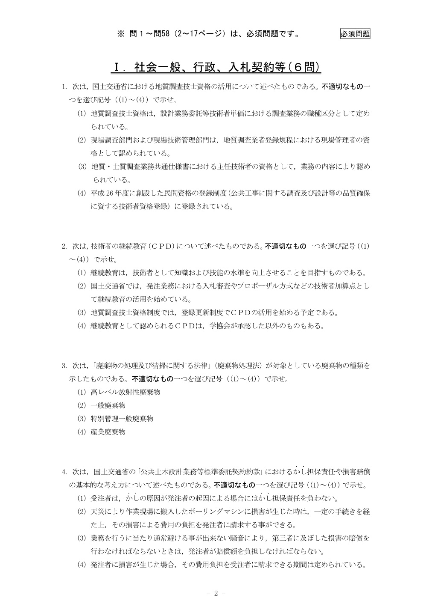
問2
必須
2. 次は，技術者の継続教育（ＣＰＤ）について述べたものである。不適切なもの一つを選び記号（(1)
～(4)）で示せ。
(1) 継続教育は，技術者として知識および技能の水準を向上させることを目指すものである。
(2) 国土交通省では，発注業務における入札審査やプロポーザル方式などの技術者加算点とし
て継続教育の活用を始めている。
(3) 地質調査技士資格制度では，登録更新制度でＣＰＤの活用を始める予定である。
(4) 継続教育として認められるＣＰＤは，学協会が承認した以外のものもある。
正解(3)：一般事務局Ａ02
図表・イラスト確認用：PDF紙面（2ページ）を表示
問3
必須
3. 次は，「廃棄物の処理及び清掃に関する法律」（廃棄物処理法）が対象としている廃棄物の種類を
示したものである。不適切なもの一つを選び記号（(1)～(4)）で示せ。
(1) 高レベル放射性廃棄物
(2) 一般廃棄物
(3) 特別管理一般廃棄物
(4) 産業廃棄物
正解 (1）一般清田Ａ08
図表・イラスト確認用：PDF紙面（2ページ）を表示
問4
必須
4. 次は，国土交通省の「公共土木設計業務等標準委託契約約款」におけるかし
．．
担保責任や損害賠償
の基本的な考え方について述べたものである。不適切なもの一つを選び記号（(1)～(4)）で示せ。
(1) 受注者は，かし
．．
の原因が発注者の起因による場合にはかし
．．
担保責任を負わない。
(2) 天災により作業現場に搬入したボーリングマシンに損害が生じた時は，一定の手続きを経
た上，その損害による費用の負担を発注者に請求する事ができる。
(3) 業務を行うに当たり通常避ける事が出来ない騒音により，第三者に及ぼした損害の賠償を
行わなければならないときは，発注者が賠償額を負担しなければならない。
(4) 発注者に損害が生じた場合，その費用負担を受注者に請求できる期間は定められている。
正解 (4) 一般事務局Ａ25
- 3 -
必須問題
図表・イラスト確認用：PDF紙面（2ページ）を表示
問5
必須
5. 次は，受注者が業務上知り得た情報の扱いに関する守秘義務について述べたものである。適切な
もの一つを選び記号（(1)～(4)）で示せ。
(1) 発注者の同意がなくても外部に公表することができる。
(2) 加工して使用していれば外部に公表してもよい。
(3) 業務完了後であっても外部に公表してはならない。
(4) 退職した後であれば外部に公表してもよい。
正解(3) 一般若杉Ａ26
図表・イラスト確認用：PDF紙面（3ページ）を表示
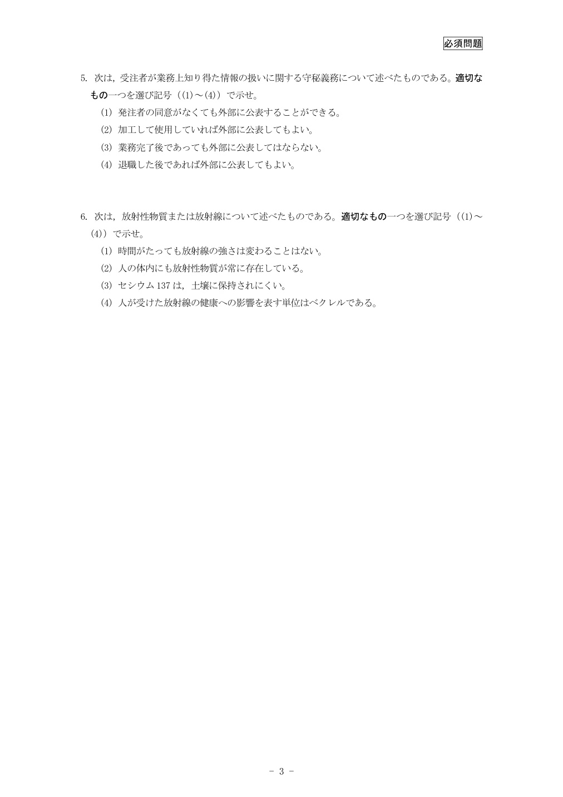
問6
必須
6. 次は，放射性物質または放射線について述べたものである。適切なもの一つを選び記号（(1)～
(4)）で示せ。
(1) 時間がたっても放射線の強さは変わることはない。
(2) 人の体内にも放射性物質が常に存在している。
(3) セシウム137 は，土壌に保持されにくい。
(4) 人が受けた放射線の健康への影響を表す単位はベクレルである。
正答 (2) 土壌打木番外
- 4 -
必須問題
Ⅱ．地質、測量、土木、建築等の知識(８問)
図表・イラスト確認用：PDF紙面（3ページ）を表示
問7
必須
7. 次は，表層部に砂や礫などの粗粒堆積物が分布すると想定される地形を示したものである。不適
切なもの一つを選び記号（(1)～(4)）で示せ。
(1) 後背湿地
(2) 河岸段丘
(3) 扇状地
(4) 自然堤防
解答：(1) 一般清田Ｂ02
図表・イラスト確認用：PDF紙面（4ページ）を表示
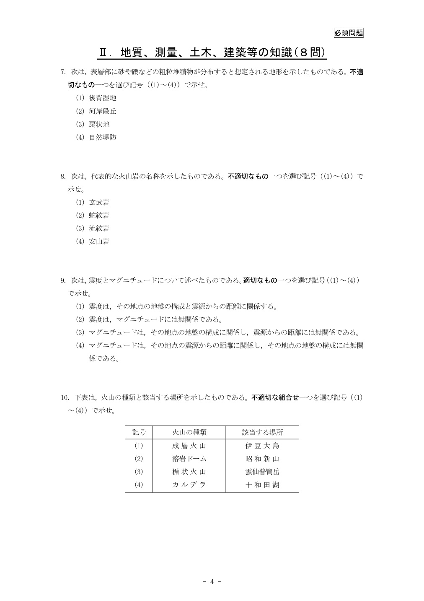
問8
必須
8. 次は，代表的な火山岩の名称を示したものである。不適切なもの一つを選び記号（(1)～(4)）で
示せ。
(1) 玄武岩
(2) 蛇紋岩
(3) 流紋岩
(4) 安山岩
正解：(2) 一般清田Ｂ03
図表・イラスト確認用：PDF紙面（4ページ）を表示
問9
必須
9. 次は，震度とマグニチュードについて述べたものである。適切なもの一つを選び記号（(1)～(4)）
で示せ。
(1) 震度は，その地点の地盤の構成と震源からの距離に関係する。
(2) 震度は，マグニチュードには無関係である。
(3) マグニチュードは，その地点の地盤の構成に関係し，震源からの距離には無関係である。
(4) マグニチュードは，その地点の震源からの距離に関係し，その地点の地盤の構成には無関
係である。
正解 （１） 一般神﨑Ｂ04
図表・イラスト確認用：PDF紙面（4ページ）を表示
問10
必須
10. 下表は，火山の種類と該当する場所を示したものである。不適切な組合せ一つを選び記号（(1)
～(4)）で示せ。
記号
火山の種類
該当する場所
(1)
(2)
(3)
(4)
成層火山
溶岩ドーム
楯状火山
カルデラ
伊豆大島
昭和新山
雲仙普賢岳
十和田湖
正解(3) 一般神﨑Ｂ06
- 5 -
必須問題
図表・イラスト確認用：PDF紙面（4ページ）を表示
問11
必須
11. 次は，ボーリング柱状図の地点情報について述べたものである。不適切なもの一つを選び記号
（(1)～(4)）で示せ。
(1) 測量法の改正により測量の基準が「日本測地系」から「世界測地系」に変わった。
(2) ボーリング交換用データにより位置座標を読み取ることができる。
(3) 位置の誤差を1ｍ以内にするためには,緯度経度は1/100 秒の読取精度が必要である。
(4) 国内でのボーリング位置は，東経20～46 度，北緯51～78 度の間である。
正解（4） 一般若杉Ｂ13
図表・イラスト確認用：PDF紙面（5ページ）を表示
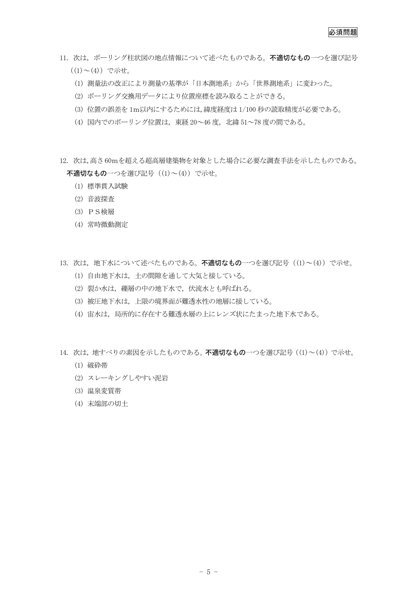
問12
必須
12. 次は，高さ60ｍを超える超高層建築物を対象とした場合に必要な調査手法を示したものである。
不適切なもの一つを選び記号（(1)～(4)）で示せ。
(1) 標準貫入試験
(2) 音波探査
(3) ＰＳ検層
(4) 常時微動測定
解答：(2) 一般安藤Ｂ22
図表・イラスト確認用：PDF紙面（5ページ）を表示
問13
必須
13. 次は，地下水について述べたものである。不適切なもの一つを選び記号（(1)～(4)）で示せ。
(1) 自由地下水は，土の間隙を通して大気と接している。
(2) 裂か水は，礫層の中の地下水で，伏流水とも呼ばれる。
(3) 被圧地下水は，上限の境界面が難透水性の地層に接している。
(4) 宙水は，局所的に存在する難透水層の上にレンズ状にたまった地下水である。
解答：(2) 一般安藤Ｂ25
図表・イラスト確認用：PDF紙面（5ページ）を表示
問14
必須
14. 次は，地すべりの素因を示したものである。不適切なもの一つを選び記号（(1)～(4)）で示せ。
(1) 破砕帯
(2) スレーキングしやすい泥岩
(3) 温泉変質帯
(4) 末端部の切土
正解(4) 一般遠藤Ｂ34
- 6 -
必須問題
Ⅲ．現場技術の知識(３２問)
図表・イラスト確認用：PDF紙面（5ページ）を表示
問15
必須
15. 次は，スピンドル型油圧フィード式ボーリングマシンの基本構造について述べたものであ
る。文章中の空欄 Ａ ～ Ｄ に当てはまる語句の適切な組合せ一つを選び記号（(1)
～(4)）で示せ。
ボーリングマシンの主な装置は，ドリルストリングス（ロッド他掘削用ツールス）などを
揚降するための Ａ ，せん孔装置と巻揚装置に適切な回転数を供給する Ｂ ，スピ
ンドルに回転と推力を伝達するための Ｃ ，原動機からの動力を伝える Ｄ ，油圧
装置および操作装置などで構成されている。
記号
Ａ
Ｂ
Ｃ
Ｄ
（1）
(2)
(3)
(4)
せん孔装置
巻揚装置
変速装置
巻揚装置
伝達装置
変速装置
伝達装置
変速装置
変速装置
せん孔装置
せん孔装置
伝達装置
巻揚装置
伝達装置
巻揚装置
せん孔装置
正解 （２） ボ土屋共通Ｃ01-1
図表・イラスト確認用：PDF紙面（6ページ）を表示
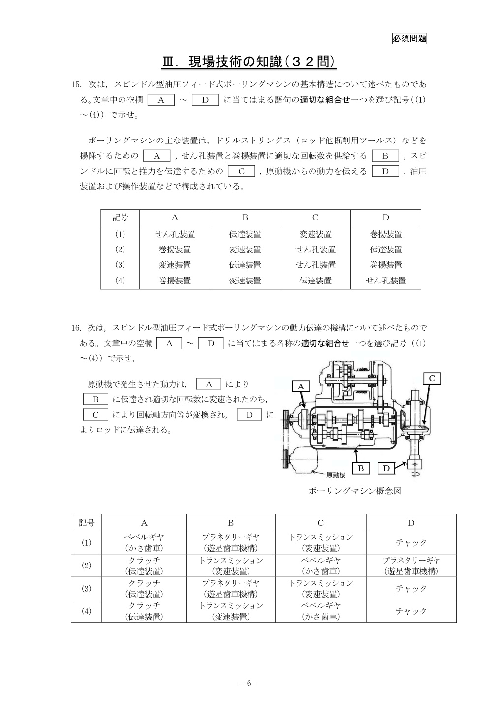
問16
必須
16. 次は，スピンドル型油圧フィード式ボーリングマシンの動力伝達の機構について述べたもので
ある。文章中の空欄 Ａ ～ Ｄ に当てはまる名称の適切な組合せ一つを選び記号（(1)
～(4)）で示せ。
原動機で発生させた動力は， Ａ により
Ｂ に伝達され適切な回転数に変速されたのち，
Ｃ により回転軸方向等が変換され， Ｄ に
よりロッドに伝達される。
ボーリングマシン概念図
記号
Ａ
Ｂ
Ｃ
Ｄ
(1)
ベベルギヤ
（かさ歯車）
プラネタリーギヤ
（遊星歯車機構）
トランスミッション
（変速装置）
チャック
(2)
クラッチ
（伝達装置）
トランスミッション
（変速装置）
ベベルギヤ
（かさ歯車）
プラネタリーギヤ
（遊星歯車機構）
(3)
クラッチ
（伝達装置）
プラネタリーギヤ
（遊星歯車機構）
トランスミッション
（変速装置）
チャック
(4)
クラッチ
（伝達装置）
トランスミッション
（変速装置）
ベベルギヤ
（かさ歯車）
チャック
正解 （4）ボ土屋共通Ｃ01-2
原動機
Ａ
Ｃ
Ｄ
Ｂ
原動機
- 7 -
必須問題
図表・イラスト確認用：PDF紙面（6ページ）を表示
問17
必須
17. 次は，油圧フィード式スピンドル型ボーリングマシンについて述べたものである。不適切なも
の一つを選び記号（(1)～(4)）で示せ。
(1) 掘進中，ロッドへの回転力・給進力・引上げ力は，チャックによって伝達される。
(2) スピンドルは，引上げ力の方が給進力より大きい。
(3) スピンドルの回転数と回転トルクは反比例の関係にあり，回転数が２倍になると，回転ト
ルクは1/2 倍になる。
(4) スピンドルの回転と巻上装置は，油圧方式にて駆動される。
正解 （4）ボ土屋共通Ｃ02-1
図表・イラスト確認用：PDF紙面（7ページ）を表示
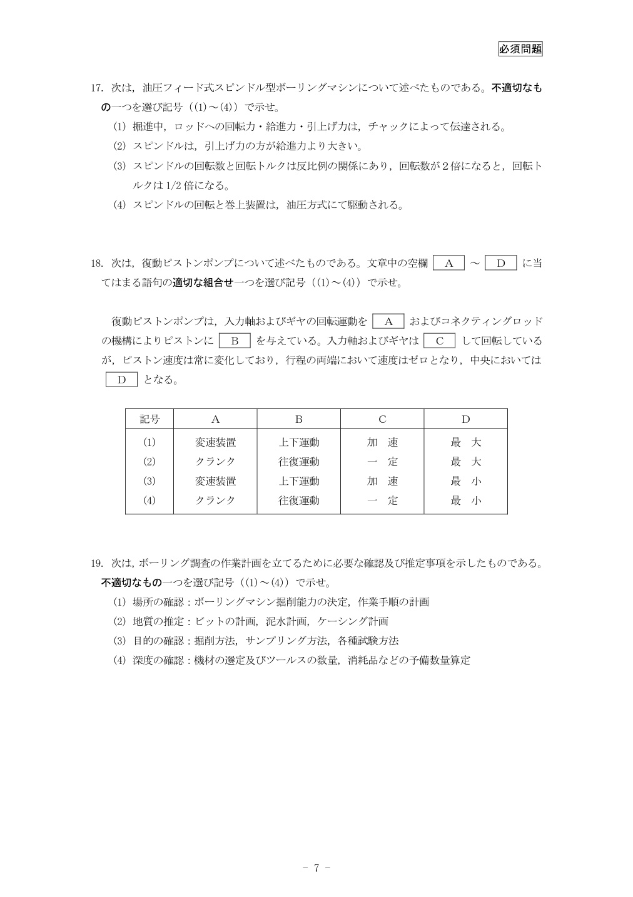
問18
必須
18. 次は，復動ピストンポンプについて述べたものである。文章中の空欄 Ａ ～ Ｄ に当
てはまる語句の適切な組合せ一つを選び記号（(1)～(4)）で示せ。
復動ピストンポンプは，入力軸およびギヤの回転運動を Ａ およびコネクティングロッド
の機構によりピストンに Ｂ を与えている。入力軸およびギヤは Ｃ して回転している
が，ピストン速度は常に変化しており，行程の両端において速度はゼロとなり，中央においては
Ｄ となる。
記号
Ａ
Ｂ
Ｃ
Ｄ
(1)
(2)
(3)
(4)
変速装置
クランク
変速装置
クランク
上下運動
往復運動
上下運動
往復運動
加 速
一 定
加 速
一 定
最 大
最 大
最 小
最 小
正解＝（2）ボ土屋共通Ｃ02-2
図表・イラスト確認用：PDF紙面（7ページ）を表示
問19
必須
19. 次は，ボーリング調査の作業計画を立てるために必要な確認及び推定事項を示したものである。
不適切なもの一つを選び記号（(1)～(4)）で示せ。
(1) 場所の確認：ボーリングマシン掘削能力の決定，作業手順の計画
(2) 地質の推定：ビットの計画，泥水計画，ケーシング計画
(3) 目的の確認：掘削方法，サンプリング方法，各種試験方法
(4) 深度の確認：機材の選定及びツールスの数量，消耗品などの予備数量算定
正解 （1） ボ土屋共通Ｃ03
- 8 -
必須問題
図表・イラスト確認用：PDF紙面（7ページ）を表示
問20
必須
20. 次は，ボーリング用機材の小運搬に使用されるモノレールについて述べたものである。文章中
の空欄 Ａ ～ Ｄ に当てはまる語句の適切な組合せ一つを選び記号（(1)～(4)）で示せ。
モノレールは地表近くに設置された Ａ を駆動輪とローラーで挟み走行するもので，一般
的に，原動機を搭載した Ｂ と機材を搭載する Ｃ により構成される。近・中距離の道
路のない Ｄ の運搬に適している。
記号
Ａ
Ｂ
Ｃ
Ｄ
（1）
（2）
（3）
（4）
ワイヤ
レール
ワイヤ
レール
台
車
台
車
けん引装置
けん引装置
けん引装置
けん引装置
台
車
台
車
急傾斜地
緩傾斜地
緩傾斜地
急傾斜地
解答 （4）ボ土屋共通Ｃ04
図表・イラスト確認用：PDF紙面（8ページ）を表示
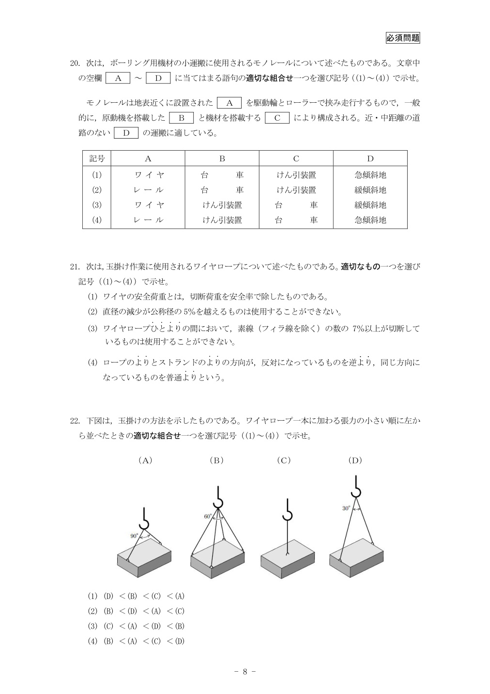
問21
必須
21. 次は,玉掛け作業に使用されるワイヤロープについて述べたものである。適切なもの一つを選び
記号（(1)～(4)）で示せ。
(1) ワイヤの安全荷重とは，切断荷重を安全率で除したものである。
(2) 直径の減少が公称径の5％を越えるものは使用することができない。
(3) ワイヤロープひとより
・
・
・
・
の間において，素線（フィラ線を除く）の数の7％以上が切断して
いるものは使用することができない。
(4) ロープのより
・・
とストランドのより
・・
の方向が，反対になっているものを逆より
．．
，同じ方向に
なっているものを普通より
・・
という。
解答 （1） ボ土屋共通Ｃ05-1
図表・イラスト確認用：PDF紙面（8ページ）を表示
問22
必須
22. 下図は，玉掛けの方法を示したものである。ワイヤロープ一本に加わる張力の小さい順に左か
ら並べたときの適切な組合せ一つを選び記号（(1)～(4)）で示せ。
（Ａ） （Ｂ） (Ｃ) (Ｄ)
(1) (D) ＜(B) ＜(C) ＜(A)
(2) (B) ＜(D) ＜(A) ＜(C)
(3) (C) ＜(A) ＜(D) ＜(B)
(4) (B) ＜(A) ＜(C) ＜(D)
解答 （2）ボ土屋共通Ｃ05-2
- 9 -
必須問題
図表・イラスト確認用：PDF紙面（8ページ）を表示
問23
必須
23. 次は，単管足場仮設について述べたものである。不適切なもの一つを選び記号（(1)～(4)）で
示せ。
(1) 緊結金具（クランプ）には，自在形，直交形および特殊形がある。
(2) 継手金具には，摩擦形とせん断形がある。
(3) ベース金具には，固定形と自在形がある。
(4) 足場用の単管は，両端にピン加工を施してある。
正解＝（3）ボ土屋共通Ｃ05-3
図表・イラスト確認用：PDF紙面（9ページ）を表示
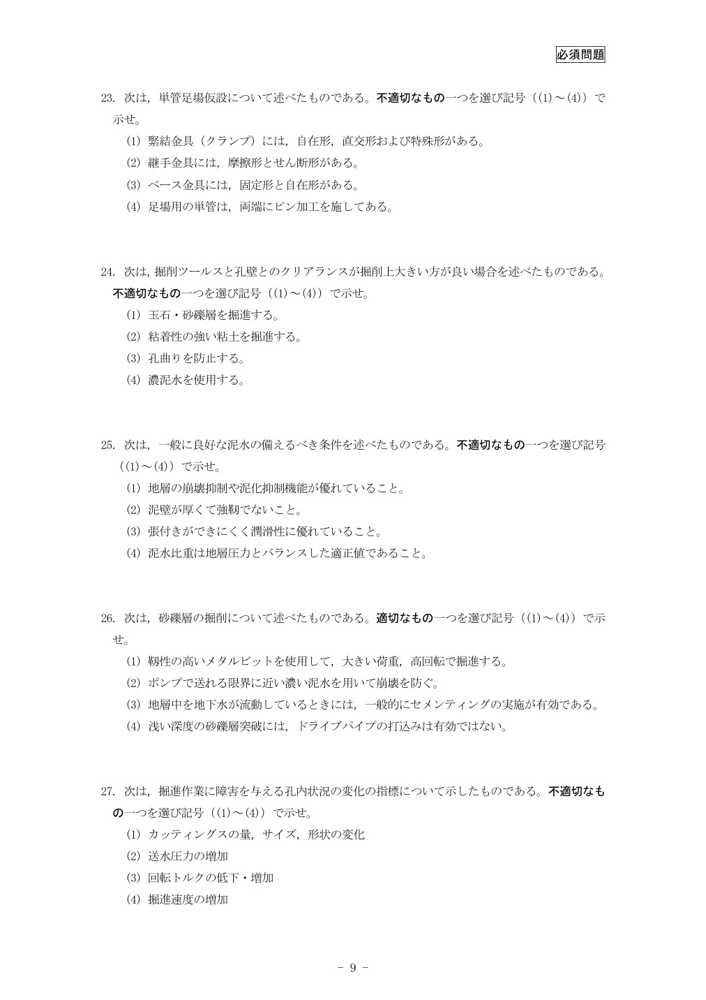
問24
必須
24. 次は，掘削ツールスと孔壁とのクリアランスが掘削上大きい方が良い場合を述べたものである。
不適切なもの一つを選び記号（(1)～(4)）で示せ。
(1) 玉石・砂礫層を掘進する。
(2) 粘着性の強い粘土を掘進する。
(3) 孔曲りを防止する。
(4) 濃泥水を使用する。
正解 (３) ボ伊藤共通C06-1
図表・イラスト確認用：PDF紙面（9ページ）を表示
問25
必須
25. 次は，一般に良好な泥水の備えるべき条件を述べたものである。不適切なもの一つを選び記号
（(1)～(4)）で示せ。
(1) 地層の崩壊抑制や泥化抑制機能が優れていること。
(2) 泥壁が厚くて強靭でないこと。
(3) 張付きができにくく潤滑性に優れていること。
(4) 泥水比重は地層圧力とバランスした適正値であること。
正解 （２）ボ伊藤共通C06-2
図表・イラスト確認用：PDF紙面（9ページ）を表示
問26
必須
26. 次は，砂礫層の掘削について述べたものである。適切なもの一つを選び記号（(1)～(4)）で示
せ。
(1) 靱性の高いメタルビットを使用して，大きい荷重，高回転で掘進する。
(2) ポンプで送れる限界に近い濃い泥水を用いて崩壊を防ぐ。
(3) 地層中を地下水が流動しているときには，一般的にセメンティングの実施が有効である。
(4) 浅い深度の砂礫層突破には，ドライブパイプの打込みは有効ではない。
正解 (２) ボ伊藤共通C07-1
図表・イラスト確認用：PDF紙面（9ページ）を表示
問27
必須
27. 次は，掘進作業に障害を与える孔内状況の変化の指標について示したものである。不適切なも
の一つを選び記号（(1)～(4)）で示せ。
(1) カッティングスの量，サイズ，形状の変化
(2) 送水圧力の増加
(3) 回転トルクの低下・増加
(4) 掘進速度の増加
正解 (４) ボ伊藤共通C07-2
- 10 -
必須問題
図表・イラスト確認用：PDF紙面（9ページ）を表示
問28
必須
28. 次は，コアリングについて述べたものである。不適切なもの一つを選び記号（(1)～(4)）で示
せ。
(1) 軟岩のコア採取率を上げるためには，一般に低速回転で小量送水が良い。
(2) 破砕帯のコア採取率を上げるため，ロータリー式スリーブ内蔵二重管サンプラーを使った。
(3) コア詰まりが生じたら速やかにコアバレルを引き上げる。
(4) ダイヤモンドビットは砂礫層の無水掘りに適している。
正解 （４）ボ伊藤共通C08-1
図表・イラスト確認用：PDF紙面（10ページ）を表示
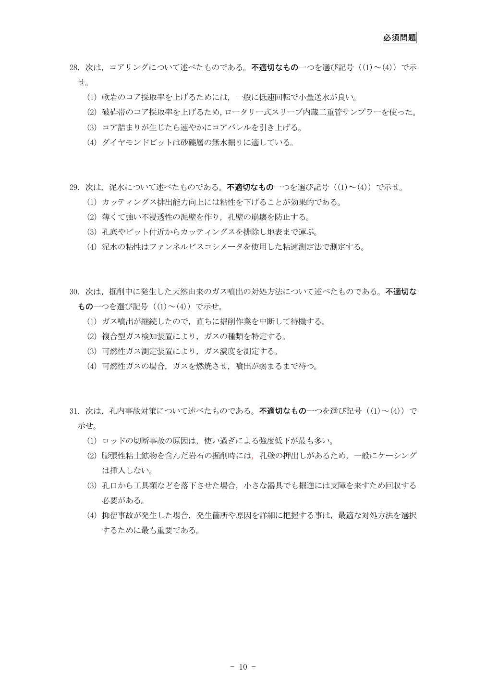
問29
必須
29. 次は，泥水について述べたものである。不適切なもの一つを選び記号（(1)～(4)）で示せ。
(1) カッティングス排出能力向上には粘性を下げることが効果的である。
(2) 薄くて強い不浸透性の泥壁を作り，孔壁の崩壊を防止する。
(3) 孔底やビット付近からカッティングスを排除し地表まで運ぶ。
(4) 泥水の粘性はファンネルビスコシメータを使用した粘速測定法で測定する。
解答 (1) ボ沼宮内共通C09-4
図表・イラスト確認用：PDF紙面（10ページ）を表示
問30
必須
30. 次は，掘削中に発生した天然由来のガス噴出の対処方法について述べたものである。不適切な
もの一つを選び記号（(1)～(4)）で示せ。
(1) ガス噴出が継続したので，直ちに掘削作業を中断して待機する。
(2) 複合型ガス検知装置により，ガスの種類を特定する。
(3) 可燃性ガス測定装置により，ガス濃度を測定する。
(4) 可燃性ガスの場合，ガスを燃焼させ，噴出が弱まるまで待つ。
解答(4) ボ五十嵐共通C10-2
図表・イラスト確認用：PDF紙面（10ページ）を表示
問31
必須
31．次は，孔内事故対策について述べたものである。不適切なもの一つを選び記号（(1)～(4)）で
示せ。
(1) ロッドの切断事故の原因は，使い過ぎによる強度低下が最も多い。
(2) 膨張性粘土鉱物を含んだ岩石の掘削時には，孔壁の押出しがあるため，一般にケーシング
は挿入しない。
(3) 孔口から工具類などを落下させた場合，小さな器具でも掘進には支障を来すため回収する
必要がある。
(4) 抑留事故が発生した場合，発生箇所や原因を詳細に把握する事は，最適な対処方法を選択
するために最も重要である。
解答 (2) ボ沼宮内共通C10-3
- 11 -
必須問題
図表・イラスト確認用：PDF紙面（10ページ）を表示
問32
必須
32. 次は，静的圧入締固め工法による液状化層の地盤改良工事に関連する事前・事後ボーリングに
ついて述べたものである。不適切なもの一つを選び記号（(1)～(4)）で示せ。
(1) 事前ボーリングでのデータにより液状化判定を実施し，改良深度範囲・改良率を設定する。
(2) 液状化判定に必要な力学試験を実施するために，乱れの少ない試料採取を行う。
(3) 事前・事後ボーリングで標準貫入試験を実施し，N 値の比較により改良効果を確認する。
(4) 事後ボーリングは，改良効果が現れる施工完了後28 日以降に実施しなければならない。
解答(4) ボ五十嵐共通C11-1
図表・イラスト確認用：PDF紙面（11ページ）を表示
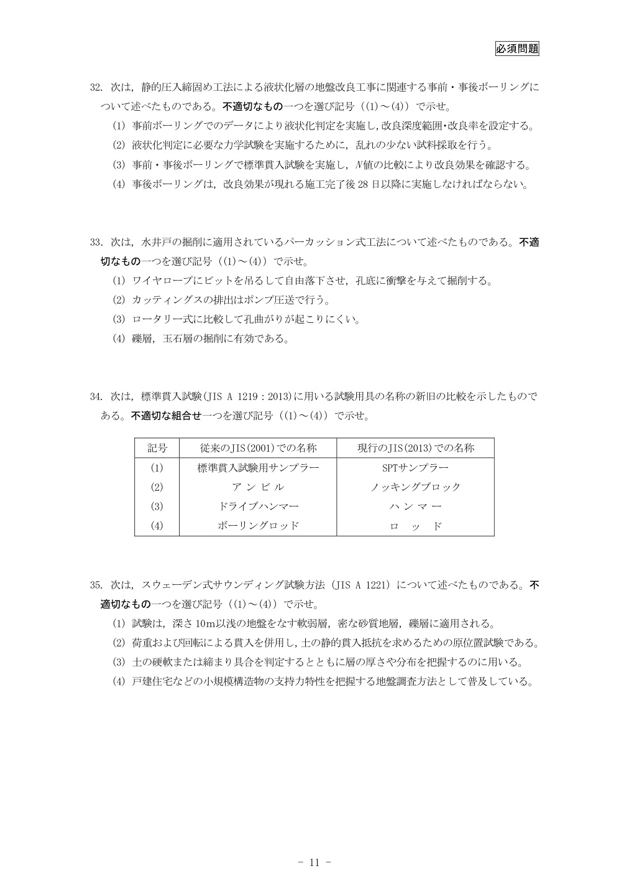
問33
必須
33．次は，水井戸の掘削に適用されているパーカッション式工法について述べたものである。不適
切なもの一つを選び記号（(1)～(4)）で示せ。
(1) ワイヤロープにビットを吊るして自由落下させ，孔底に衝撃を与えて掘削する。
(2) カッティングスの排出はポンプ圧送で行う。
(3) ロータリー式に比較して孔曲がりが起こりにくい。
(4) 礫層，玉石層の掘削に有効である。
解答(2) ボ五十嵐共通C11-2
図表・イラスト確認用：PDF紙面（11ページ）を表示
問34
必須
34. 次は，標準貫入試験(JIS A 1219：2013)に用いる試験用具の名称の新旧の比較を示したもので
ある。不適切な組合せ一つを選び記号（(1)～(4)）で示せ。
記号
従来のJIS(2001)での名称
現行のJIS(2013)での名称
(1)
(2)
(3)
(4)
標準貫入試験用サンプラー
アンビル
ドライブハンマー
ボーリングロッド
SPTサンプラー
ノッキングブロック
ハンマー
ロ
ッ
ド
正解 (２) 土質高田共通C22-1
図表・イラスト確認用：PDF紙面（11ページ）を表示
問35
必須
35. 次は，スウェーデン式サウンディング試験方法（JIS A 1221）について述べたものである。不
適切なもの一つを選び記号（(1)～(4)）で示せ。
(1) 試験は，深さ10ｍ以浅の地盤をなす軟弱層，密な砂質地層，礫層に適用される。
(2) 荷重および回転による貫入を併用し，土の静的貫入抵抗を求めるための原位置試験である。
(3) 土の硬軟または締まり具合を判定するとともに層の厚さや分布を把握するのに用いる。
(4) 戸建住宅などの小規模構造物の支持力特性を把握する地盤調査方法として普及している。
解答 (1) 岩盤木谷共通Ｃ23
- 12 -
必須問題
図表・イラスト確認用：PDF紙面（11ページ）を表示
問36
必須
36. 次は，観測井による砂質・礫質地盤の地下水位の測定方法（JGS 1312-2012）について述べたも
のである。不適切なもの一つを選び記号（(1)～(4)）で示せ。
(1) 観測井は，測定対象区間にスクリーンを設けた水位観測用パイプを挿入して仕上げる。
(2) 水位観測用のパイプは，孔壁との隙間の上下方向の地下水の流れを妨げないように設置す
る。
(3) 雨水などの地表水が観測井に浸入しないように孔口部を遮水する。
(4) 観測井は，十分に洗浄する。
解答(2) 岩盤木谷共通Ｃ27
図表・イラスト確認用：PDF紙面（12ページ）を表示
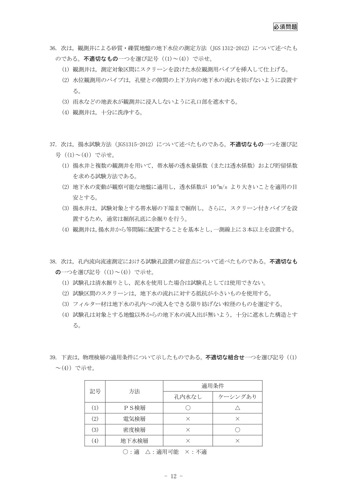
問37
必須
37. 次は，揚水試験方法（JGS1315-2012）について述べたものである。不適切なもの一つを選び記
号（(1)～(4)）で示せ。
(1) 揚水井と複数の観測井を用いて，帯水層の透水量係数（または透水係数）および貯留係数
を求める試験方法である。
(2) 地下水の変動が観察可能な地盤に適用し，透水係数が10-6m/s より大きいことを適用の目
安とする。
(3) 揚水井は，試験対象とする帯水層の下端まで掘削し，さらに，スクリーン付きパイプを設
置するため，通常は掘削孔底に余掘りを行う。
(4) 観測井は，揚水井から等間隔に配置することを基本とし，一測線上に３本以上を設置する。
解答(4) 岩盤木谷共通Ｃ28-1
図表・イラスト確認用：PDF紙面（12ページ）を表示
問38
必須
38. 次は，孔内流向流速測定における試験孔設置の留意点について述べたものである。不適切なも
の一つを選び記号（(1)～(4)）で示せ。
(1) 試験孔は清水掘りとし，泥水を使用した場合は試験孔としては使用できない。
(2) 試験区間のスクリーンは，地下水の流れに対する抵抗が小さいものを使用する。
(3) フィルター材は地下水の孔内への流入をできる限り妨げない粒径のものを選定する。
(4) 試験孔は対象とする地盤以外からの地下水の流入出が無いよう，十分に遮水した構造とす
る。
解答(1) 岩盤木谷共通Ｃ29-1
図表・イラスト確認用：PDF紙面（12ページ）を表示
問39
必須
39. 下表は，物理検層の適用条件について示したものである。不適切な組合せ一つを選び記号（(1)
～(4)）で示せ。
記号
方法
適用条件
孔内水なし
ケーシングあり
(1)
ＰＳ検層
○
△
(2)
電気検層
×
×
(3)
密度検層
×
○
(4)
地下水検層
×
×
○：適 △：適用可能 ×：不適
解答(3) 岩盤木谷共通Ｃ29-2
- 13 -
必須問題
図表・イラスト確認用：PDF紙面（12ページ）を表示
問40
必須
40. 次は，地盤の電気検層方法（JGS1121-2012）について述べたものである。不適切なもの一つを
選び記号（(1)～(4)）で示せ。
(1) 孔内水位より浅い部分では測定できない。
(2) ボーリング孔に，ケーシングが挿入されている区間では測定できない。
(3) 検層の結果は，帯水層の判定に用いられる。
(4) 孔口と地表電極との距離は，最大電極間隔の５倍以上を目安とする。
正解（4） 土質千葉共通C29
図表・イラスト確認用：PDF紙面（13ページ）を表示
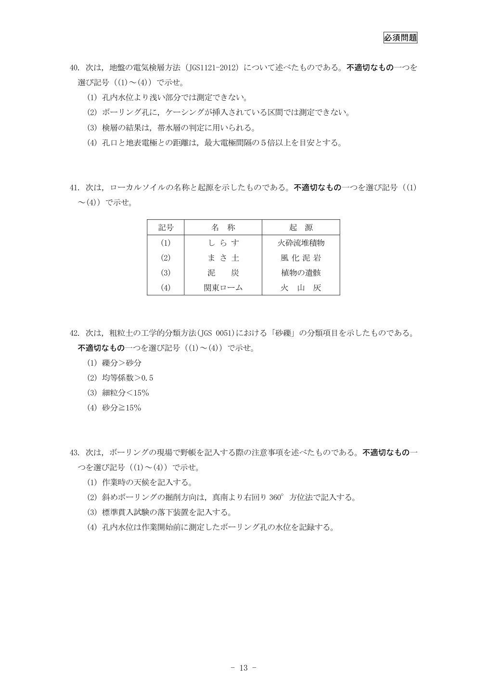
問41
必須
41. 次は，ローカルソイルの名称と起源を示したものである。不適切なもの一つを選び記号（(1)
～(4)）で示せ。
記号
名 称
起 源
(1)
(2)
(3)
(4)
し ら す
ま さ 土
泥 炭
関東ローム
火砕流堆積物
風化泥岩
植物の遺骸
火
山
灰
正解（2）土質千葉共通C31-3
図表・イラスト確認用：PDF紙面（13ページ）を表示
問42
必須
42. 次は，粗粒土の工学的分類方法(JGS 0051)における「砂礫」の分類項目を示したものである。
不適切なもの一つを選び記号（(1)～(4)）で示せ。
(1) 礫分＞砂分
(2) 均等係数＞0.5
(3) 細粒分＜15％
(4) 砂分≧15％
正解(2) 土質川井共通C31-5
図表・イラスト確認用：PDF紙面（13ページ）を表示
問43
必須
43. 次は，ボーリングの現場で野帳を記入する際の注意事項を述べたものである。不適切なもの一
つを選び記号（(1)～(4)）で示せ。
(1) 作業時の天候を記入する。
(2) 斜めボーリングの掘削方向は，真南より右回り360°方位法で記入する。
(3) 標準貫入試験の落下装置を記入する。
(4) 孔内水位は作業開始前に測定したボーリング孔の水位を記録する。
正解（2） 土質千葉共通C33-1
- 14 -
必須問題
図表・イラスト確認用：PDF紙面（13ページ）を表示
問44
必須
44. 次は，堆積物(マトリックス)の色調の主な原因を示したものである。不適切なもの一つを選び
記号（(1)～(4)）で示せ。
(1) 黄褐～赤褐色・・酸化第二鉄による酸化状態
(2) 暗褐～黒色・・・四塩化炭素による酸化状態
(3) 灰色系・・・・・第一鉄化合物による還元状態
(4) 青紫色系・・・・ビビアナイトによる還元状態
正解(2) 土質川井共通C33-3
図表・イラスト確認用：PDF紙面（14ページ）を表示
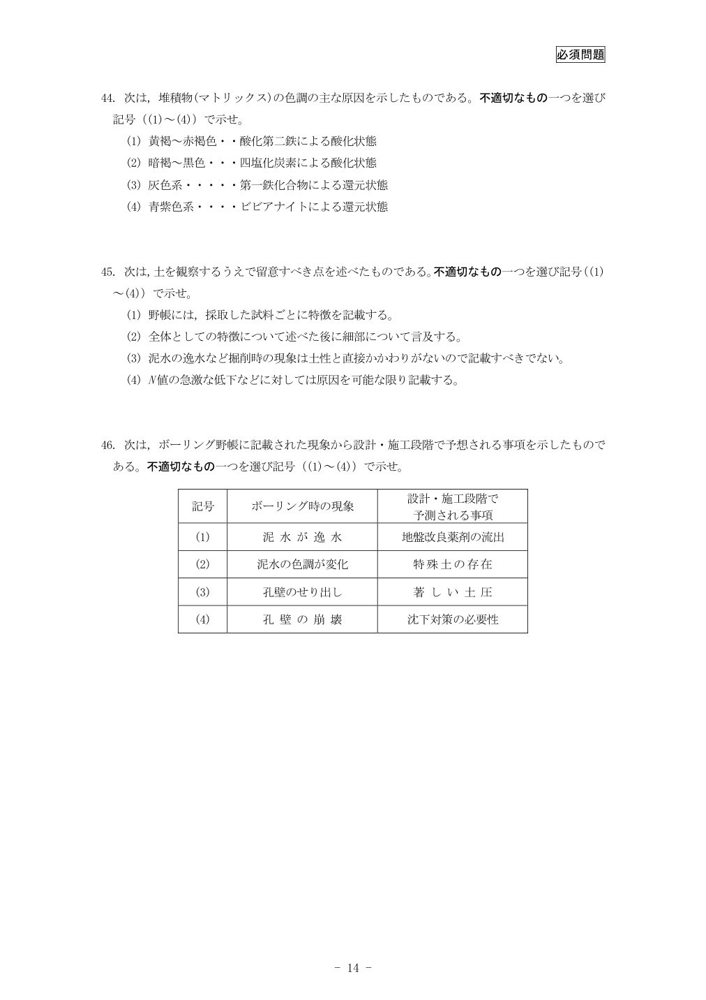
問45
必須
45. 次は，土を観察するうえで留意すべき点を述べたものである。不適切なもの一つを選び記号（(1)
～(4)）で示せ。
(1) 野帳には，採取した試料ごとに特徴を記載する。
(2) 全体としての特徴について述べた後に細部について言及する。
(3) 泥水の逸水など掘削時の現象は土性と直接かかわりがないので記載すべきでない。
(4) N 値の急激な低下などに対しては原因を可能な限り記載する。
正解(3) 土質川井共通C33-4
図表・イラスト確認用：PDF紙面（14ページ）を表示
問46
必須
46. 次は，ボーリング野帳に記載された現象から設計・施工段階で予想される事項を示したもので
ある。不適切なもの一つを選び記号（(1)～(4)）で示せ。
記号
ボーリング時の現象
設計・施工段階で
予測される事項
(1)
泥水が逸水
地盤改良薬剤の流出
(2)
泥水の色調が変化
特殊土の存在
(3)
孔壁のせり出し
著しい土圧
(4)
孔壁の崩壊
沈下対策の必要性
正解(4) 土質川井共通C33-5
- 15 -
必須問題
Ⅳ．調査技術の理解度(４問)
図表・イラスト確認用：PDF紙面（14ページ）を表示
問47
必須
47. 次は，クリノメーターで測定した地層の走向・傾斜について述べたものである。空欄 Ａ ～
Ｄ に当てはまる語句の適切な組合せ一つを選び記号（(1)～(4)）で示せ。
Ｎ30°Ｅ・40°ＮＷ とは，走向が北を基準として Ａ 方向に Ｂ であり，傾斜が，
Ｃ 方向に， Ｄ で下がっていることを表す。
記号
Ａ
Ｂ
Ｃ
Ｄ
(1)
(2)
(3)
(4)
西
東
西
東
40°
40°
30°
30°
北東
北西
北東
北西
30°
30°
40°
40°
正解（4） 土質渡辺共通D01
図表・イラスト確認用：PDF紙面（15ページ）を表示
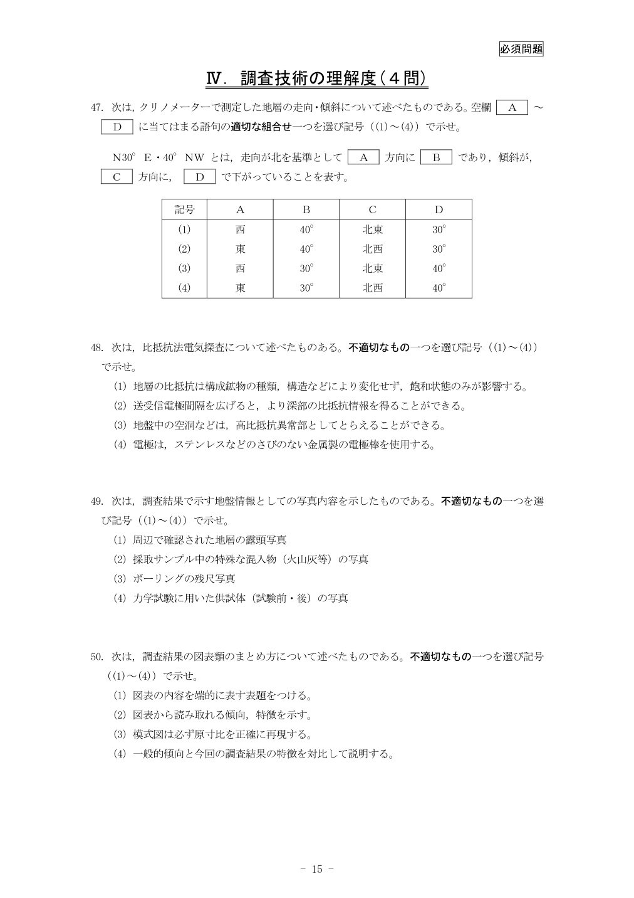
問48
必須
48. 次は，比抵抗法電気探査について述べたものある。不適切なもの一つを選び記号（(1)～(4)）
で示せ。
(1) 地層の比抵抗は構成鉱物の種類，構造などにより変化せず，飽和状態のみが影響する。
(2) 送受信電極間隔を広げると，より深部の比抵抗情報を得ることができる。
(3) 地盤中の空洞などは，高比抵抗異常部としてとらえることができる。
(4) 電極は，ステンレスなどのさびのない金属製の電極棒を使用する。
正解(1) 土質渡辺共通D03
図表・イラスト確認用：PDF紙面（15ページ）を表示
問49
必須
49. 次は，調査結果で示す地盤情報としての写真内容を示したものである。不適切なもの一つを選
び記号（(1)～(4)）で示せ。
(1) 周辺で確認された地層の露頭写真
(2) 採取サンプル中の特殊な混入物（火山灰等）の写真
(3) ボーリングの残尺写真
(4) 力学試験に用いた供試体（試験前・後）の写真
正解 (3) 土質渡辺共通D07-1
図表・イラスト確認用：PDF紙面（15ページ）を表示
問50
必須
50. 次は，調査結果の図表類のまとめ方について述べたものである。不適切なもの一つを選び記号
（(1)～(4)）で示せ。
(1) 図表の内容を端的に表す表題をつける。
(2) 図表から読み取れる傾向，特徴を示す。
(3) 模式図は必ず原寸比を正確に再現する。
(4) 一般的傾向と今回の調査結果の特徴を対比して説明する。
正解 (3) 土質渡辺共通D07-2
- 16 -
必須問題
Ⅴ．管理技法(８問)
図表・イラスト確認用：PDF紙面（15ページ）を表示
問51
必須
51. 次は，労働安全衛生法について述べたものである。不適切なもの一つを選び記号（(1)～(4)）
で示せ。
(1) 労働安全衛生法施行令および労働安全衛生規則により詳細な取り決めを補足している。
(2) 事業者と労働者を区別しているが，現場の作業に従事している場合は会社の役員であって
も労働者に区別される。
(3) 目的は職場における労働者の安全と健康の確保である。
(4) 工事の発注者や設計者も含めて労働災害防止の責務を有することが規定されている。
解答 (2) ボ沼宮内共通F01-1
図表・イラスト確認用：PDF紙面（16ページ）を表示
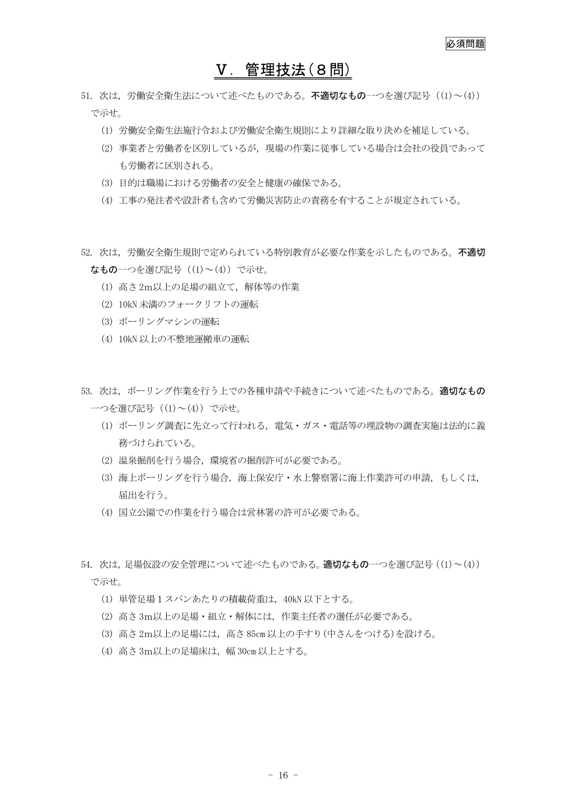
問52
必須
52. 次は，労働安全衛生規則で定められている特別教育が必要な作業を示したものである。不適切
なもの一つを選び記号（(1)～(4)）で示せ。
(1) 高さ2ｍ以上の足場の組立て，解体等の作業
(2) 10kN 未満のフォークリフトの運転
(3) ボーリングマシンの運転
(4) 10kN 以上の不整地運搬車の運転
解答(4) ボ伊藤共通F01-2
図表・イラスト確認用：PDF紙面（16ページ）を表示
問53
必須
53. 次は，ボーリング作業を行う上での各種申請や手続きについて述べたものである。適切なもの
一つを選び記号（(1)～(4)）で示せ。
(1) ボーリング調査に先立って行われる，電気・ガス・電話等の埋設物の調査実施は法的に義
務づけられている。
(2) 温泉掘削を行う場合，環境省の掘削許可が必要である。
(3) 海上ボーリングを行う場合，海上保安庁・水上警察署に海上作業許可の申請，もしくは，
届出を行う。
(4) 国立公園での作業を行う場合は営林署の許可が必要である。
解答 (3) ボ沼宮内共通F02
図表・イラスト確認用：PDF紙面（16ページ）を表示
問54
必須
54. 次は，足場仮設の安全管理について述べたものである。適切なもの一つを選び記号（(1)～(4)）
で示せ。
(1) 単管足場１スパンあたりの積載荷重は，40kN 以下とする。
(2) 高さ3ｍ以上の足場・組立・解体には，作業主任者の選任が必要である。
(3) 高さ2ｍ以上の足場には，高さ85cm 以上の手すり(中さんをつける)を設ける。
(4) 高さ3ｍ以上の足場床は，幅30cm 以上とする。
解答（3）ボ伊藤共通F03-1
- 17 -
必須問題
図表・イラスト確認用：PDF紙面（16ページ）を表示
問55
必須
55. 次は，ボーリングマシンの安全管理について述べたものである。適切なもの一つを選び記号（(1)
～(4)）で示せ。
(1) チャック作業やロッド着脱作業を行う場合には，クラッチレバーにストッパを取り付けて
確実に動力を遮断しなければならない。
(2) ロッドを吊上げた後，巻上機に荷重をかけたまま保持するのが最も安全な方法である。
(3) ボーリング作業の場合，ワイヤロープの安全率は２以上確保する。
(4) ボーリングマシンに多用される回転トルクは，0.4～4kN／ｍ程度のため，回転部に起因す
る事故は，重大な事故・災害にはならない。
解答（１）ボ伊藤共通F03-2
図表・イラスト確認用：PDF紙面（17ページ）を表示
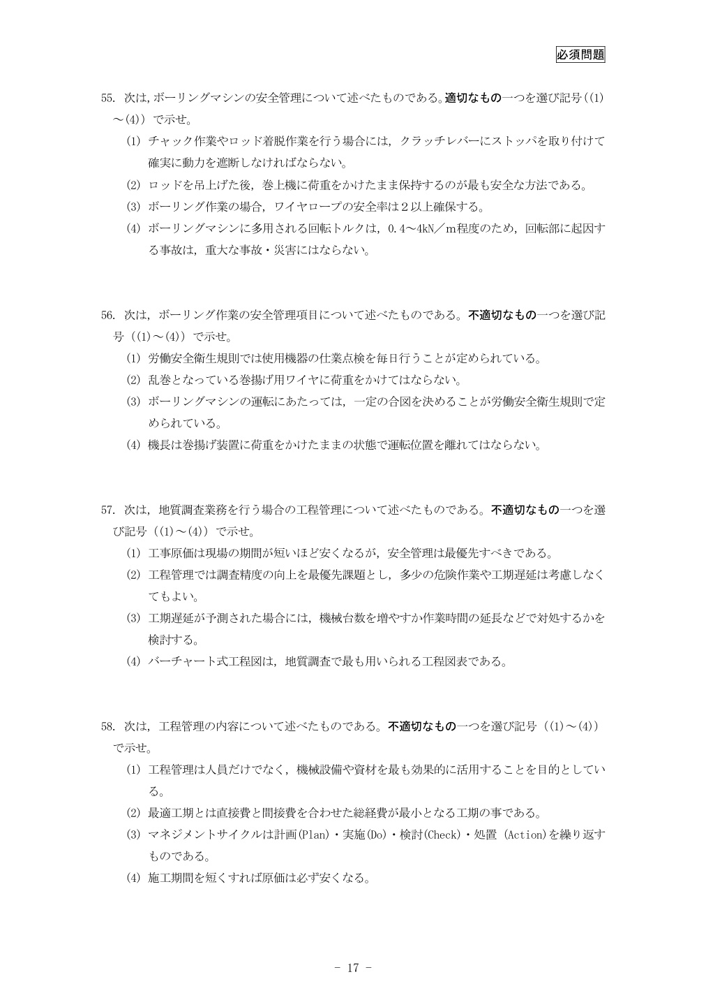
問56
必須
56. 次は，ボーリング作業の安全管理項目について述べたものである。不適切なもの一つを選び記
号（(1)～(4)）で示せ。
(1) 労働安全衛生規則では使用機器の仕業点検を毎日行うことが定められている。
(2) 乱巻となっている巻揚げ用ワイヤに荷重をかけてはならない。
(3) ボーリングマシンの運転にあたっては，一定の合図を決めることが労働安全衛生規則で定
められている。
(4) 機長は巻揚げ装置に荷重をかけたままの状態で運転位置を離れてはならない。
解答 (1) ボ沼宮内共通F03-3
図表・イラスト確認用：PDF紙面（17ページ）を表示
問57
必須
57. 次は，地質調査業務を行う場合の工程管理について述べたものである。不適切なもの一つを選
び記号（(1)～(4)）で示せ。
(1) 工事原価は現場の期間が短いほど安くなるが，安全管理は最優先すべきである。
(2) 工程管理では調査精度の向上を最優先課題とし，多少の危険作業や工期遅延は考慮しなく
てもよい。
(3) 工期遅延が予測された場合には，機械台数を増やすか作業時間の延長などで対処するかを
検討する。
(4) バーチャート式工程図は，地質調査で最も用いられる工程図表である。
解答（2）ボ伊藤共通F04-1
図表・イラスト確認用：PDF紙面（17ページ）を表示
問58
必須
58. 次は，工程管理の内容について述べたものである。不適切なもの一つを選び記号（(1)～(4)）
で示せ。
(1) 工程管理は人員だけでなく，機械設備や資材を最も効果的に活用することを目的としてい
る。
(2) 最適工期とは直接費と間接費を合わせた総経費が最小となる工期の事である。
(3) マネジメントサイクルは計画(Plan)・実施(Do)・検討(Check)・処置（Action)を繰り返す
ものである。
(4) 施工期間を短くすれば原価は必ず安くなる。
解答 (4) ボ沼宮内共通F04-2
- 18 -
選択問題
Ⅵ．選 択 問 題
問59から問102は、選択問題である。
以下のＡ群またはＢ群のいずれか一方を任意選択の上、解答すること。
選択問題Ａ群：22 問（主に土質に関連した分野；問59～問80） ※19～25 ページ
選択問題Ｂ群：22 問（主に岩盤に関連した分野；問81～問102）※26～32 ページ
※Ａ群、Ｂ群の選択は、受験願書で選択記載した主な調査対象「土質」、「岩盤」の
いずれかに関わらず、任意で選択することができる。
※Ａ群およびＢ群の両方を解答している場合、選択問題の採点は行わない。解答
用紙への記入の際は、注意して記入すること。
- 19 -
選択問題 Ａ群
選択問題Ａ群：22問（主に土質に関連した分野；問59～問80）
現場技術の知識 １８問、調査技術の理解度 ４問
図表・イラスト確認用：PDF紙面（17ページ）を表示
問59
A群（土質）
59. 次は，ボーリングに使用される機器について述べたものである。不適切なもの一つを選び記号
（(1)～(4)）で示せ。
(1) ウォータースイベルは，ロッドの揚降に用いられる。
(2) セジメントチューブは，カッティングス（掘屑）を採取するためのチューブである。
(3) シングルコアバレルは，崩れやすい地質や浸食されやすい地質のコア採取には不向きであ
る。
(4) ロッドホルダは，孔内のボーリングロッドを孔の口元で保持する器具である。
正解＝（1） ボ土屋土質Ｃ02-3
図表・イラスト確認用：PDF紙面（19ページ）を表示
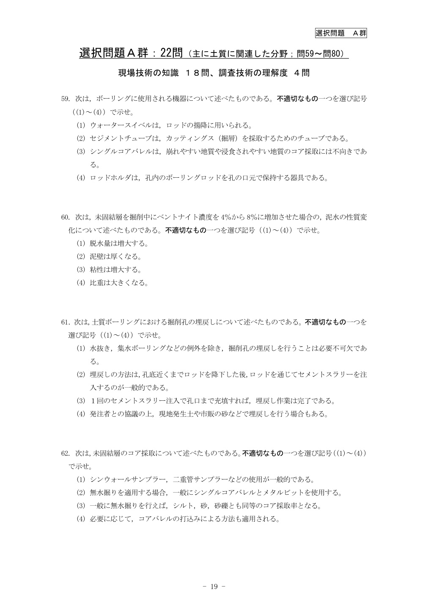
問60
A群（土質）
60. 次は，未固結層を掘削中にベントナイト濃度を4％から8％に増加させた場合の，泥水の性質変
化について述べたものである。不適切なもの一つを選び記号（(1)～(4)）で示せ。
(1) 脱水量は増大する。
(2) 泥壁は厚くなる。
(3) 粘性は増大する。
(4) 比重は大きくなる。
解答(1) ボ五十嵐土質C06-4
図表・イラスト確認用：PDF紙面（19ページ）を表示
問61
A群（土質）
61．次は,土質ボーリングにおける掘削孔の埋戻しについて述べたものである。不適切なもの一つを
選び記号（(1)～(4)）で示せ。
(1) 水抜き，集水ボーリングなどの例外を除き，掘削孔の埋戻しを行うことは必要不可欠であ
る。
(2) 埋戻しの方法は，孔底近くまでロッドを降下した後,ロッドを通じてセメントスラリーを注
入するのが一般的である。
(3) １回のセメントスラリー注入で孔口まで充填すれば，埋戻し作業は完了である。
(4) 発注者との協議の上，現地発生土や市販の砂などで埋戻しを行う場合もある。
解答(3) ボ五十嵐土質C07-4
図表・イラスト確認用：PDF紙面（19ページ）を表示
問62
A群（土質）
62. 次は，未固結層のコア採取について述べたものである。不適切なもの一つを選び記号（(1)～(4)）
で示せ。
(1) シンウォールサンプラー，二重管サンプラーなどの使用が一般的である。
(2) 無水掘りを適用する場合，一般にシングルコアバレルとメタルビットを使用する。
(3) 一般に無水掘りを行えば，シルト，砂，砂礫とも同等のコア採取率となる。
(4) 必要に応じて，コアバレルの打込みによる方法も適用される。
解答(3) ボ五十嵐土質C08-3
- 20 -
選択問題 Ａ群
図表・イラスト確認用：PDF紙面（19ページ）を表示
問63
A群（土質）
63．次は，ロッドを引揚げる際に孔口からロッド外周に泥水を注入する作業の目的について述べた
ものである。適切なもの一つを選び記号（(1)～(4)）で示せ。
(1) コアバレルの肩にカッティングスが沈殿して抑留するのを防ぐ。
(2) 孔内水位の低下による孔壁の崩壊を防ぐ。
(3) コアバレルと孔壁との摩擦力を小さくする。
(4) ロッドの浮力を増して引揚げを容易にする。
解答(2) ボ五十嵐土質C09-3
図表・イラスト確認用：PDF紙面（20ページ）を表示
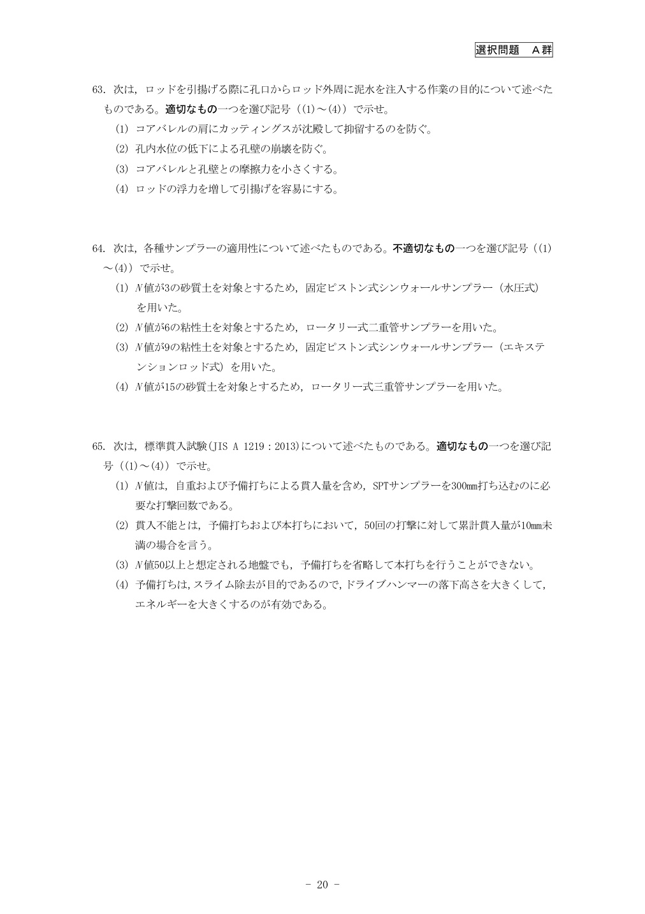
問64
A群（土質）
64. 次は，各種サンプラーの適用性について述べたものである。不適切なもの一つを選び記号（(1)
～(4)）で示せ。
(1) N 値が3の砂質土を対象とするため，固定ピストン式シンウォールサンプラー（水圧式）
を用いた。
(2) N 値が6の粘性土を対象とするため，ロータリー式二重管サンプラーを用いた。
(3) N 値が9の粘性土を対象とするため，固定ピストン式シンウォールサンプラー（エキステ
ンションロッド式）を用いた。
(4) N 値が15の砂質土を対象とするため，ロータリー式三重管サンプラーを用いた。
正解 (3) 土質高田土質C21
図表・イラスト確認用：PDF紙面（20ページ）を表示
問65
A群（土質）
65. 次は，標準貫入試験(JIS A 1219：2013)について述べたものである。適切なもの一つを選び記
号（(1)～(4)）で示せ。
(1) N 値は，自重および予備打ちによる貫入量を含め，SPTサンプラーを300mm打ち込むのに必
要な打撃回数である。
(2) 貫入不能とは，予備打ちおよび本打ちにおいて，50回の打撃に対して累計貫入量が10mm未
満の場合を言う。
(3) N 値50以上と想定される地盤でも，予備打ちを省略して本打ちを行うことができない。
(4) 予備打ちは，スライム除去が目的であるので，ドライブハンマーの落下高さを大きくして，
エネルギーを大きくするのが有効である。
正解 (2) 土質高田土質C22-2
- 21 -
選択問題 Ａ群
図表・イラスト確認用：PDF紙面（20ページ）を表示
問66
A群（土質）
66. 下図は，プレッシャーメータ試験(JGS 1531:2012)で得られた有効孔壁圧力と孔壁面の変位量お
よびクリープ量を示したものである。図中の Ａ ～ Ｄ のうち，降伏圧力を示すもの一
つを選び記号（(1)～(4)）で示せ。
(1) Ａ
(2) Ｂ
(3) Ｃ
(4) Ｄ
正解 (3) 土質高田土質C25
図表・イラスト確認用：PDF紙面（21ページ）を表示
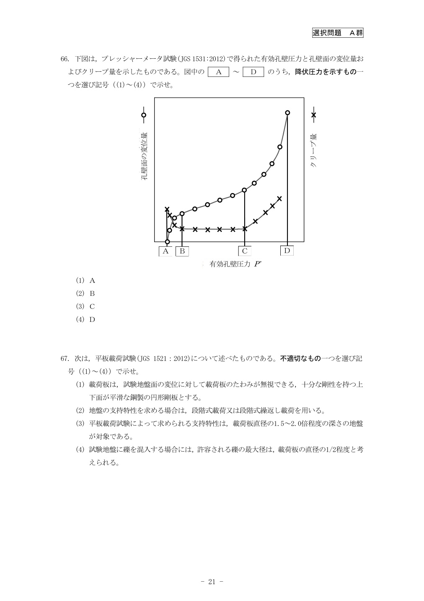
問67
A群（土質）
67. 次は，平板載荷試験(JGS 1521：2012)について述べたものである。不適切なもの一つを選び記
号（(1)～(4)）で示せ。
(1) 載荷板は，試験地盤面の変位に対して載荷板のたわみが無視できる，十分な剛性を持つ上
下面が平滑な鋼製の円形剛板とする。
(2) 地盤の支持特性を求める場合は，段階式載荷又は段階式繰返し載荷を用いる。
(3) 平板載荷試験によって求められる支持特性は，載荷板直径の1.5～2.0倍程度の深さの地盤
が対象である。
(4) 試験地盤に礫を混入する場合には，許容される礫の最大径は，載荷板の直径の1/2程度と考
えられる。
正解 (4) 土質高田土質C26-1
クリープ量
Ａ
Ｂ
Ｄ
Ｃ
孔壁面の変位量
有効孔壁圧力P’
クリープ量
- 22 -
選択問題 Ａ群
図表・イラスト確認用：PDF紙面（21ページ）を表示
問68
A群（土質）
68. 次は，現場密度試験のうち，質量を直接測定する方法を示したものである。不適切なもの一つ
を選び記号（(1)～(4)）で示せ。
(1) コアカッターによる土の密度試験方法
(2) 砂置換法による土の密度試験方法
(3) 突き砂法による土の密度試験方法
(4) RI計器による土の密度試験方法
正解 (4) 土質高田土質C26-2
図表・イラスト確認用：PDF紙面（22ページ）を表示
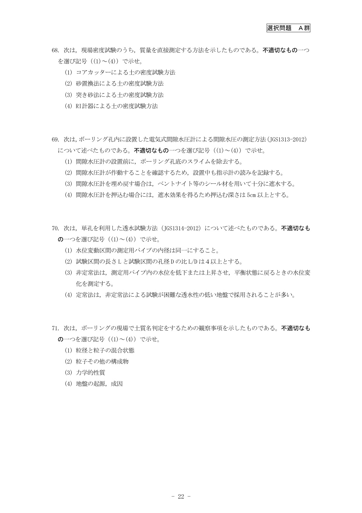
問69
A群（土質）
69. 次は，ボーリング孔内に設置した電気式間隙水圧計による間隙水圧の測定方法（JGS1313-2012）
について述べたものである。不適切なもの一つを選び記号（(1)～(4)）で示せ。
(1) 間隙水圧計の設置前に，ボーリング孔底のスライムを除去する。
(2) 間隙水圧計が作動することを確認するため，設置中も指示計の読みを記録する。
(3) 間隙水圧計を埋め戻す場合は，ベントナイト等のシール材を用いて十分に遮水する。
(4) 間隙水圧計を押込む場合には，遮水効果を得るため押込む深さは5cm 以上とする。
正解（4） 土質千葉土質C27
図表・イラスト確認用：PDF紙面（22ページ）を表示
問70
A群（土質）
70. 次は，単孔を利用した透水試験方法（JGS1314-2012）について述べたものである。不適切なも
の一つを選び記号（(1)～(4)）で示せ。
(1) 水位変動区間の測定用パイプの内径は同一にすること。
(2) 試験区間の長さL と試験区間の孔径D の比L/D は４以上とする。
(3) 非定常法は，測定用パイプ内の水位を低下または上昇させ，平衡状態に戻るときの水位変
化を測定する。
(4) 定常法は，非定常法による試験が困難な透水性の低い地盤で採用されることが多い。
正解（4） 土質千葉土質C28
図表・イラスト確認用：PDF紙面（22ページ）を表示
問71
A群（土質）
71. 次は，ボーリングの現場で土質名判定をするための観察事項を示したものである。不適切なも
の一つを選び記号（(1)～(4)）で示せ。
(1) 粒径と粒子の混合状態
(2) 粒子その他の構成物
(3) 力学的性質
(4) 地盤の起源，成因
正解（3） 土質千葉土質C31-1
- 23 -
選択問題 Ａ群
図表・イラスト確認用：PDF紙面（22ページ）を表示
問72
A群（土質）
72. 次は，ボーリングの現場で細粒土の土質名を判定するための観察事項を述べたものである。不
適切なもの一つを選び記号（(1)～(4)）で示せ。
(1) 水で洗い流すとき，指をこすり合わせただけで簡単に洗い流せるのは粘土である。
(2) 粘り気のある感触は粘土である。
(3) 指に土をつけてみて，ざらざらした感じは砂が混じっている。
(4) 土塊を乾燥させた場合，細砂はシルトに比べて指圧で容易にくずれる。
正解（1） 土質千葉土質C31-2
図表・イラスト確認用：PDF紙面（23ページ）を表示
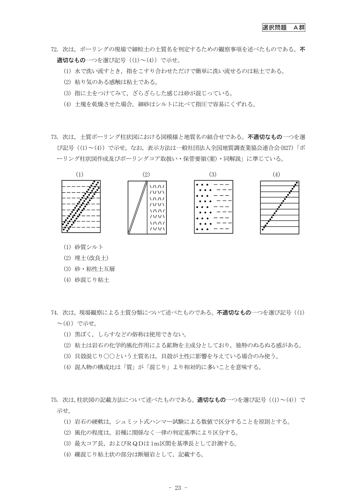
問73
A群（土質）
73. 次は，土質ボーリング柱状図における図模様と地質名の組合せである。不適切なもの一つを選
び記号（(1)～(4)）で示せ。なお，表示方法は一般社団法人全国地質調査業協会連合会(H27)「ボ
ーリング柱状図作成及びボーリングコア取扱い・保管要領(案)・同解説」に準じている。
(1) (2) (3) (4)
(1) 砂質シルト
(2) 埋土(改良土)
(3) 砂・粘性土互層
(4) 砂混じり粘土
正解(２) 土質川井土質C31-4
図表・イラスト確認用：PDF紙面（23ページ）を表示
問74
A群（土質）
74. 次は，現場観察による土質分類について述べたものである。不適切なもの一つを選び記号（(1)
～(4)）で示せ。
(1) 黒ぼく，しらすなどの俗称は使用できない。
(2) 粘土は岩石の化学的風化作用による鉱物を主成分としており，独特のぬるぬる感がある。
(3) 貝殻混じり○○という土質名は，貝殻が土性に影響を与えている場合のみ使う。
(4) 混入物の構成比は「質」が「混じり」より相対的に多いことを意味する。
正解(1) 土質川井土質C31-6
図表・イラスト確認用：PDF紙面（23ページ）を表示
問75
A群（土質）
75. 次は,柱状図の記載方法について述べたものである。適切なもの一つを選び記号（(1)～(4)）で
示せ。
(1) 岩石の硬軟は，シュミット式ハンマー試験による数値で区分することを原則とする。
(2) 風化の程度は，岩種に関係なく一律の判定基準により区分する。
(3) 最大コア長，およびＲＱＤは1ｍ区間を基準長として計測する。
(4) 礫混じり粘土状の部分は断層岩として，記載する。
正解：（3） 岩盤中下土質Ｃ33-1
- 24 -
選択問題 Ａ群
図表・イラスト確認用：PDF紙面（23ページ）を表示
問76
A群（土質）
76. 次は，ボーリング野帳に記載された記事の事例である。この記事が示す意味一つを選び記号（(1)
～(4)）で示せ。
記事の事例： 「 GL-5.00～5.60m TW(50/60) 」
(1) GL-5.00～5.60m において標準貫入試験を実施しN 値は50 回
(2) GL-5.00～5.60m において逸水し水位の回復率は50～60％
(3) GL-5.00～5.60m においてシンウォールサンプリングを実施し試料長は50cm
(4) GL-5.00～5.60m において外径60mm 内径50mm のステンレスケーシングを打設
正解(3) 土質川井土質C33-2
図表・イラスト確認用：PDF紙面（24ページ）を表示
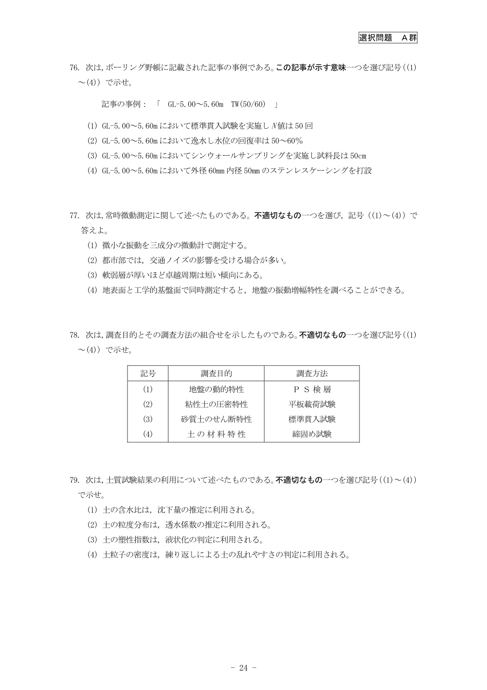
問77
A群（土質）
77. 次は,常時微動測定に関して述べたものである。不適切なもの一つを選び，記号（(1)～(4)）で
答えよ。
(1) 微小な振動を三成分の微動計で測定する。
(2) 都市部では，交通ノイズの影響を受ける場合が多い。
(3) 軟弱層が厚いほど卓越周期は短い傾向にある。
(4) 地表面と工学的基盤面で同時測定すると，地盤の振動増幅特性を調べることができる。
正解：(3) 土質渡辺土質D04-1
図表・イラスト確認用：PDF紙面（24ページ）を表示
問78
A群（土質）
78. 次は，調査目的とその調査方法の組合せを示したものである。不適切なもの一つを選び記号（(1)
～(4)）で示せ。
記号
調査目的
調査方法
(1)
(2)
(3)
(4)
地盤の動的特性
粘性土の圧密特性
砂質土のせん断特性
土の材料特性
ＰＳ検層
平板載荷試験
標準貫入試験
締固め試験
正解(2) 土質渡辺土質D04-2
図表・イラスト確認用：PDF紙面（24ページ）を表示
問79
A群（土質）
79. 次は，土質試験結果の利用について述べたものである。不適切なもの一つを選び記号（(1)～(4)）
で示せ。
(1) 土の含水比は，沈下量の推定に利用される。
(2) 土の粒度分布は，透水係数の推定に利用される。
(3) 土の塑性指数は，液状化の判定に利用される。
(4) 土粒子の密度は，練り返しによる土の乱れやすさの判定に利用される。
正解 (４) 土質渡辺土質D04-3
- 25 -
選択問題 Ａ群
図表・イラスト確認用：PDF紙面（24ページ）を表示
問80
A群（土質）
80. 次は，標準貫入試験で採取した試料を用いて実施する土質試験を示したものである。不適
切なもの一つを選び記号（(1)～(4)）で示せ。
(1) 土粒子の密度試験(JIS A 1202:2009)
(2) 土の一軸圧縮試験(JIS A 1216:2009)
(3) 土の液性・塑性限界試験(JIS A 1205:2009)
(4) 土の粒度試験(JIS A 1204:2009)
正解：(2) 試験月舘Ｄ11
- 26 -
選択問題 Ｂ群
選択問題Ｂ群：22問（主に岩盤に関連した分野；問81～問102）
現場技術の知識 １８問、調査技術の理解度 ４問
図表・イラスト確認用：PDF紙面（25ページ）を表示
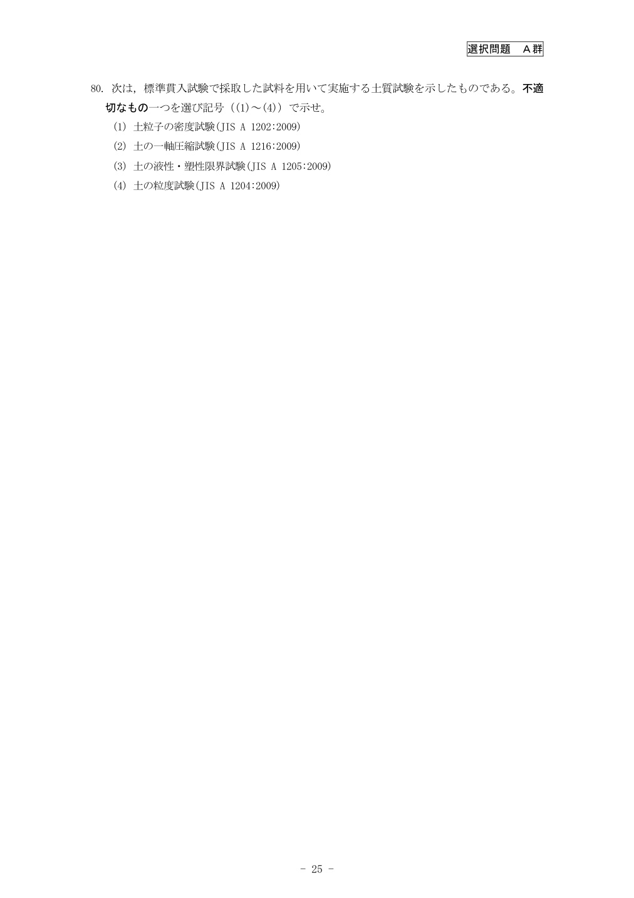
問81
B群（岩盤）
81. 次は，岩盤ボーリングに使用されるインプリグネイティッドダイヤモンドビットのウォー
ターウェイについて述べたものである。不適切なもの一つを選び記号（(1)～(4)）で示せ。
(1) 大きい場合は，ダイヤモンドの突出作用が十分に発揮できない。
(2) 大きい場合は，ビットの強度が増加する。
(3) 小さい場合は，十分な掘削流体を送れない。
(4) 小さい場合は，ビットの冷却不良となる。
正解＝ （2） ボ土屋岩盤Ｃ02-4
図表・イラスト確認用：PDF紙面（26ページ）を表示
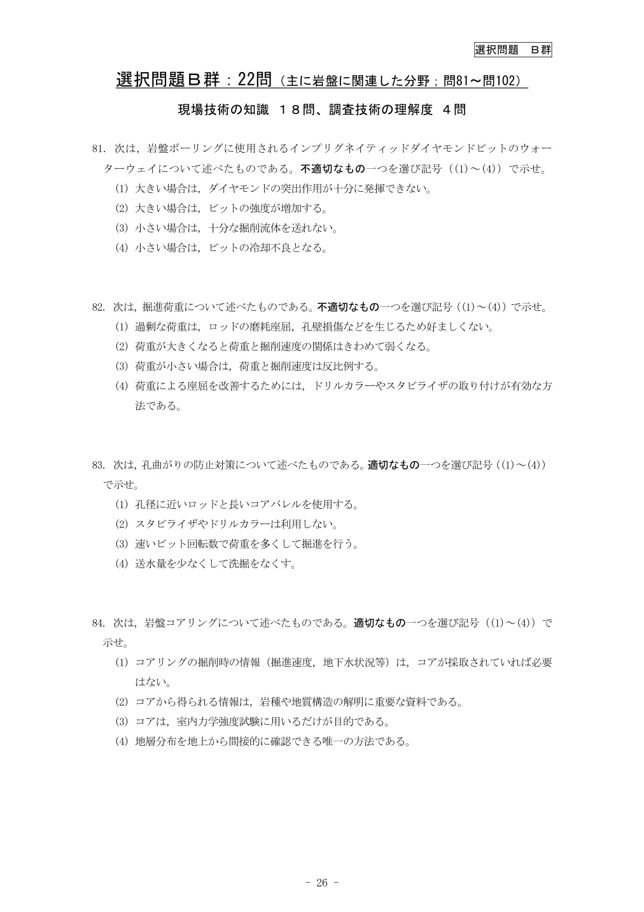
問82
B群（岩盤）
82. 次は，掘進荷重について述べたものである。不適切なもの一つを選び記号（(1)～(4)）で示せ。
(1) 過剰な荷重は，ロッドの磨耗座屈，孔壁損傷などを生じるため好ましくない。
(2) 荷重が大きくなると荷重と掘削速度の関係はきわめて弱くなる。
(3) 荷重が小さい場合は，荷重と掘削速度は反比例する。
(4) 荷重による座屈を改善するためには，ドリルカラーやスタビライザの取り付けが有効な方
法である。
正解（3） ボ湯川岩盤C06-3
図表・イラスト確認用：PDF紙面（26ページ）を表示
問83
B群（岩盤）
83. 次は，孔曲がりの防止対策について述べたものである。適切なもの一つを選び記号（(1)～(4)）
で示せ。
(1) 孔径に近いロッドと長いコアバレルを使用する。
(2) スタビライザやドリルカラーは利用しない。
(3) 速いビット回転数で荷重を多くして掘進を行う。
(4) 送水量を少なくして洗掘をなくす。
正解（1）ボ湯川岩盤C07-3
図表・イラスト確認用：PDF紙面（26ページ）を表示
問84
B群（岩盤）
84. 次は，岩盤コアリングについて述べたものである。適切なもの一つを選び記号（(1)～(4)）で
示せ。
(1) コアリングの掘削時の情報（掘進速度，地下水状況等）は，コアが採取されていれば必要
はない。
(2) コアから得られる情報は，岩種や地質構造の解明に重要な資料である。
(3) コアは，室内力学強度試験に用いるだけが目的である。
(4) 地層分布を地上から間接的に確認できる唯一の方法である。
正解（2）ボ湯川岩盤C08-2
- 27 -
選択問題 Ｂ群
図表・イラスト確認用：PDF紙面（26ページ）を表示
問85
B群（岩盤）
85. 次は，泥水について述べたものである。不適切なもの一つを選び記号（(1)～(4)）で示せ。
(1) ロッド回転抵抗を減少させ，カッティングス排除を効率化する。
(2) 泥壁をつくり地層の崩壊を防止する。
(3) 泥水比重により地層中の水の逸水を防止する。
(4) 循環停止に際し，カッティングス沈降による掘削ツールの抑留を防止する。
正解（3） ボ湯川岩盤C09-1
図表・イラスト確認用：PDF紙面（27ページ）を表示
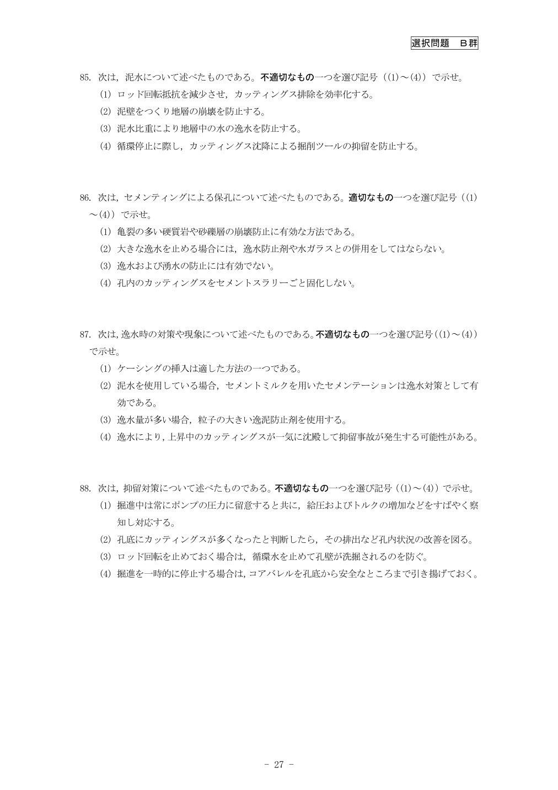
問86
B群（岩盤）
86. 次は，セメンティングによる保孔について述べたものである。適切なもの一つを選び記号（(1)
～(4)）で示せ。
(1) 亀裂の多い硬質岩や砂礫層の崩壊防止に有効な方法である。
(2) 大きな逸水を止める場合には，逸水防止剤や水ガラスとの併用をしてはならない。
(3) 逸水および湧水の防止には有効でない。
(4) 孔内のカッティングスをセメントスラリーごと固化しない。
正解（1） ボ湯川岩盤C09-2
図表・イラスト確認用：PDF紙面（27ページ）を表示
問87
B群（岩盤）
87. 次は，逸水時の対策や現象について述べたものである。不適切なもの一つを選び記号（(1)～(4)）
で示せ。
(1) ケーシングの挿入は適した方法の一つである。
(2) 泥水を使用している場合，セメントミルクを用いたセメンテーションは逸水対策として有
効である。
(3) 逸水量が多い場合，粒子の大きい逸泥防止剤を使用する。
(4) 逸水により，上昇中のカッティングスが一気に沈殿して抑留事故が発生する可能性がある。
解答 (2) ボ沼宮内岩盤C09-5
図表・イラスト確認用：PDF紙面（27ページ）を表示
問88
B群（岩盤）
88. 次は，抑留対策について述べたものである。不適切なもの一つを選び記号（(1)～(4)）で示せ。
(1) 掘進中は常にポンプの圧力に留意すると共に，給圧およびトルクの増加などをすばやく察
知し対応する。
(2) 孔底にカッティングスが多くなったと判断したら，その排出など孔内状況の改善を図る。
(3) ロッド回転を止めておく場合は，循環水を止めて孔壁が洗掘されるのを防ぐ。
(4) 掘進を一時的に停止する場合は，コアバレルを孔底から安全なところまで引き揚げておく。
正解：（3）ボ湯川岩盤C10-1
- 28 -
選択問題 Ｂ群
図表・イラスト確認用：PDF紙面（27ページ）を表示
問89
B群（岩盤）
89. 次は，工事で用いられるボーリングマシンについて述べたものである。不適切なもの一つを選
び記号（(1)～(4)）で示せ。
(1) パワースイベル型ドリルは回転数や回転トルクの制御が難しいため，先進ボーリングには
用いられない。
(2) ドライブヘッド型ドリルは強力な回転トルクを有するため，地すべり防止抑止杭工などに
利用される。
(3) ロータリーバイブロ式ドリルは砂礫・玉石・転石等の掘削・コア採取に用いられることが
多い。
(4) 近年，ロータリーパーカッションの利点を併せ持つワイヤーラインコアバレルが開発され
ている。
解答 (1) ボ沼宮内岩盤C11-3
図表・イラスト確認用：PDF紙面（28ページ）を表示
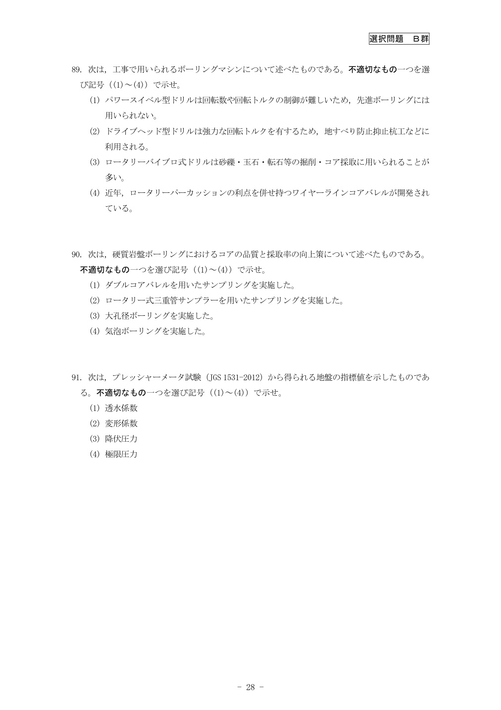
問90
B群（岩盤）
90. 次は，硬質岩盤ボーリングにおけるコアの品質と採取率の向上策について述べたものである。
不適切なもの一つを選び記号（(1)～(4)）で示せ。
(1) ダブルコアバレルを用いたサンプリングを実施した。
(2) ロータリー式三重管サンプラーを用いたサンプリングを実施した。
(3) 大孔径ボーリングを実施した。
(4) 気泡ボーリングを実施した。
解答(2) 岩盤木谷岩盤Ｃ21
図表・イラスト確認用：PDF紙面（28ページ）を表示
問91
B群（岩盤）
91. 次は，プレッシャーメータ試験（JGS 1531-2012）から得られる地盤の指標値を示したものであ
る。不適切なもの一つを選び記号（(1)～(4)）で示せ。
(1) 透水係数
(2) 変形係数
(3) 降伏圧力
(4) 極限圧力
解答(1) 岩盤木谷岩盤Ｃ25
- 29 -
選択問題 Ｂ群
図表・イラスト確認用：PDF紙面（28ページ）を表示
問92
B群（岩盤）
92. 下図は，揚水試験方法（JGS1315-2012）のうち，定流量揚水試験に先行して実施する段階揚水
試験の計測結果を図化した例である。図に示す試験結果の利用に関する記述のうち，適切なもの
一つを選び記号（(1)～(4)）で示せ。
図 段階揚水試験結果の例
(1) 図の傾きから帯水層の貯留係数を算出する。
(2) 図から限界揚水量Qｃ時の水位Swc を求め，揚水終了後にこの水位Swc まで回復した時点
を定流量揚水試験の開始水位とする。
(3) 水位がほぼ初期水位Sw0 に回復した後，限界揚水流量Qc 以下の範囲で定流量揚水試験の目
標揚水流量とする。
(4) 水位がほぼ初期水位Sw0 に回復した後，限界揚水流量Qc を超える範囲で定流量揚水試験の
目標揚水流量とする。
解答(3) 岩盤木谷岩盤Ｃ28-2
図表・イラスト確認用：PDF紙面（29ページ）を表示
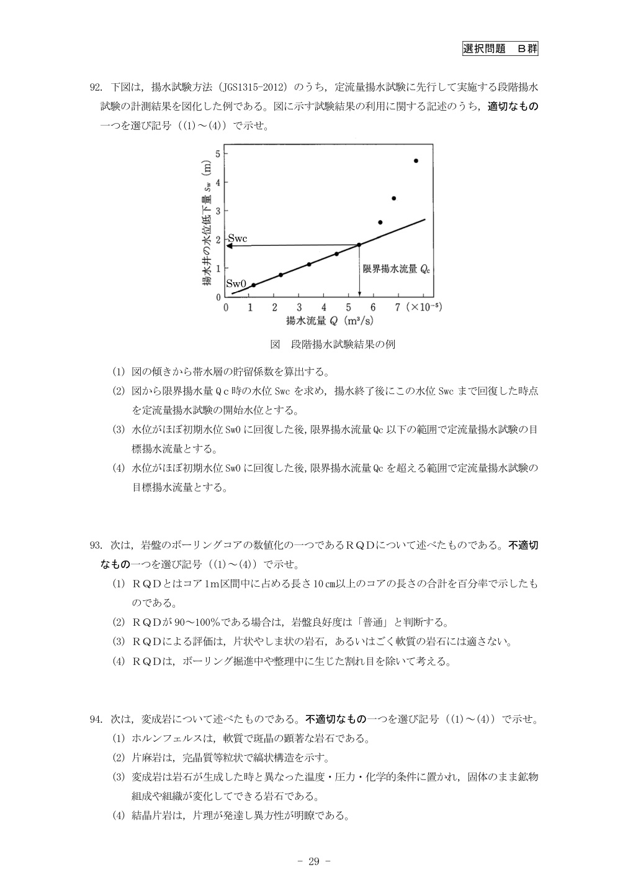
問93
B群（岩盤）
93. 次は，岩盤のボーリングコアの数値化の一つであるＲＱＤについて述べたものである。不適切
なもの一つを選び記号（(1)～(4)）で示せ。
(1) ＲＱＤとはコア1ｍ区間中に占める長さ10 ㎝以上のコアの長さの合計を百分率で示したも
のである。
(2) ＲＱＤが90～100％である場合は，岩盤良好度は「普通」と判断する。
(3) ＲＱＤによる評価は，片状やしま状の岩石，あるいはごく軟質の岩石には適さない。
(4) ＲＱＤは，ボーリング掘進中や整理中に生じた割れ目を除いて考える。
答え (2) 岩盤谷川岩盤Ｃ32-1
図表・イラスト確認用：PDF紙面（29ページ）を表示
問94
B群（岩盤）
94. 次は，変成岩について述べたものである。不適切なもの一つを選び記号（(1)～(4)）で示せ。
(1) ホルンフェルスは，軟質で斑晶の顕著な岩石である。
(2) 片麻岩は，完晶質等粒状で縞状構造を示す。
(3) 変成岩は岩石が生成した時と異なった温度・圧力・化学的条件に置かれ，固体のまま鉱物
組成や組織が変化してできる岩石である。
(4) 結晶片岩は，片理が発達し異方性が明瞭である。
答え (1) 岩盤谷川岩盤Ｃ32-2
Swc
Sw0
- 30 -
選択問題 Ｂ群
図表・イラスト確認用：PDF紙面（29ページ）を表示
問95
B群（岩盤）
95. 次は，生物岩について述べたものである。空欄 Ａ ～ Ｄ に当てはまる名称の適切な
組合せ一つを選び記号（(1)～(4)）で示せ。
生物岩には Ａ ，チャートなどがあり， Ａ はハンマーピックで傷がつけられる程度
に軟質である。 Ｂ の代わりに Ｃ が多い岩石は，ドロマイトである。チャートはハン
マーで傷つけることが困難である。その他，生物岩には Ｄ ，珪藻岩などがある。
記号
Ａ
Ｂ
Ｃ
Ｄ
(1)
(2)
(3)
(4)
石灰岩
堆積岩
堆積岩
石灰岩
Ca
Ca
Mg
Mg
Mg
Mg
Ca
SiO2
石炭
石炭
泥岩
泥岩
正解 (１) 岩盤谷川岩盤Ｃ32-3
図表・イラスト確認用：PDF紙面（30ページ）を表示
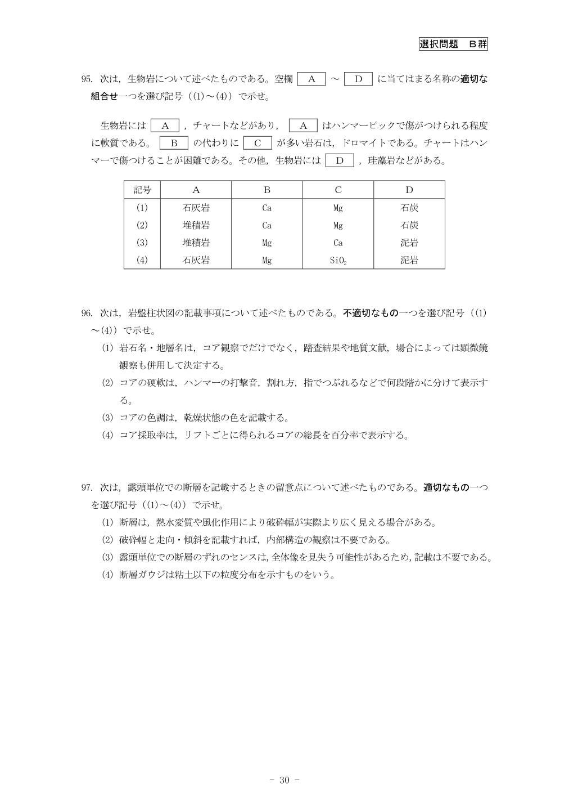
問96
B群（岩盤）
96. 次は，岩盤柱状図の記載事項について述べたものである。不適切なもの一つを選び記号（(1)
～(4)）で示せ。
(1) 岩石名・地層名は，コア観察でだけでなく，踏査結果や地質文献，場合によっては顕微鏡
観察も併用して決定する。
(2) コアの硬軟は，ハンマーの打撃音，割れ方，指でつぶれるなどで何段階かに分けて表示す
る。
(3) コアの色調は，乾燥状態の色を記載する。
(4) コア採取率は，リフトごとに得られるコアの総長を百分率で表示する。
答え(３) 岩盤谷川岩盤Ｃ32-4
図表・イラスト確認用：PDF紙面（30ページ）を表示
問97
B群（岩盤）
97. 次は，露頭単位での断層を記載するときの留意点について述べたものである。適切なもの一つ
を選び記号（(1)～(4)）で示せ。
(1) 断層は，熱水変質や風化作用により破砕幅が実際より広く見える場合がある。
(2) 破砕幅と走向・傾斜を記載すれば，内部構造の観察は不要である。
(3) 露頭単位での断層のずれのセンスは,全体像を見失う可能性があるため，記載は不要である。
(4) 断層ガウジは粘土以下の粒度分布を示すものをいう。
正解：(1) 岩盤中下岩盤Ｃ33-2
- 31 -
選択問題 Ｂ群
図表・イラスト確認用：PDF紙面（30ページ）を表示
問98
B群（岩盤）
98. 次は，ボーリング柱状図の記載について述べたものである。不適切なもの一つを選び記号（(1)
～(4)）で示せ。
(1) 岩級区分境界の深度は，地質区分境界と，合わせて記載する。
(2) 層理面の傾斜角度は，変化があればこまめに記載する。
(3) 地質境界がある場合は，その最大角度を測って記載する。
(4) 割れ目の噛み合わせが悪い場合は，その旨記載する。
正解：(1) 岩盤中下岩盤Ｃ33-3
図表・イラスト確認用：PDF紙面（31ページ）を表示
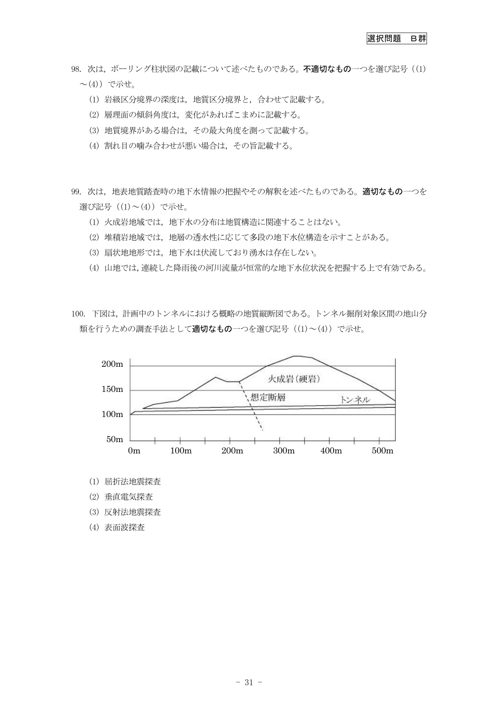
問99
B群（岩盤）
99. 次は，地表地質踏査時の地下水情報の把握やその解釈を述べたものである。適切なもの一つを
選び記号（(1)～(4)）で示せ。
(1) 火成岩地域では，地下水の分布は地質構造に関連することはない。
(2) 堆積岩地域では，地層の透水性に応じて多段の地下水位構造を示すことがある。
(3) 扇状地地形では，地下水は伏流しており湧水は存在しない。
(4) 山地では，連続した降雨後の河川流量が恒常的な地下水位状況を把握する上で有効である。
解答 (2) 岩盤中下岩盤Ｄ01
図表・イラスト確認用：PDF紙面（31ページ）を表示
問100
B群（岩盤）
100. 下図は，計画中のトンネルにおける概略の地質縦断図である。トンネル掘削対象区間の地山分
類を行うための調査手法として適切なもの一つを選び記号（(1)～(4)）で示せ。
(1) 屈折法地震探査
(2) 垂直電気探査
(3) 反射法地震探査
(4) 表面波探査
解答 (1) 岩盤中下岩盤Ｄ02
200m
150m
100m
50m
0m 100m 200m 300m 400m 500m
- 32 -
選択問題 Ｂ群
図表・イラスト確認用：PDF紙面（31ページ）を表示
問101
B群（岩盤）
101. 次は，地質調査報告書をまとめる際の留意事項について述べたものである。不適切なもの一つ
を選び記号（(1)～(4)）で示せ。
(1) ボーリング調査報告書では，広域の地形・地質について記載する。
(2) 地すべり調査報告書では，平面的な地すべり地形の明記が必要である。
(3) トンネル建設に伴う水文調査報告書では，地質構造について記載する。
(4) 宅地の地盤調査報告書では，土地取引履歴の記載が必要である。
正解 (4) 岩盤中下岩盤Ｄ07
図表・イラスト確認用：PDF紙面（32ページ）を表示
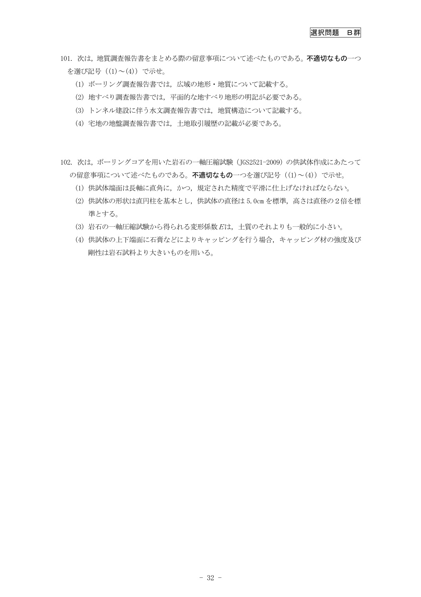
問102
B群（岩盤）
102. 次は，ボーリングコアを用いた岩石の一軸圧縮試験（JGS2521-2009）の供試体作成にあたって
の留意事項について述べたものである。不適切なもの一つを選び記号（(1)～(4)）で示せ。
(1) 供試体端面は長軸に直角に，かつ，規定された精度で平滑に仕上げなければならない。
(2) 供試体の形状は直円柱を基本とし，供試体の直径は5.0cm を標準，高さは直径の２倍を標
準とする。
(3) 岩石の一軸圧縮試験から得られる変形係数Ｅは，土質のそれよりも一般的に小さい。
(4) 供試体の上下端面に石膏などによりキャッピングを行う場合，キャッピング材の強度及び
剛性は岩石試料より大きいものを用いる。
正解：(3) 試験月舘Ｄ12
- 33 -
Ⅶ．記述式問題 (2問)
必須問題
以下の問いに対する解答を答案用紙（その２）に記述せよ。
第１問
ボーリングにおける孔曲りの原因となるものを５つ記述せよ。
第２問
陸上での調査ボーリングの作業写真について，その撮影項目を作業の経過に沿う順番で10
項目，箇条書きにて記せ。ただし，以下(1)～(4)の条件下とし，類似の項目を2 つ以上列挙
しないこと。
《 条 件 》
（1）掘削地点は土の平坦地で，機材運搬車両が横付け可能である。
（2）試掘は実施しない。
（3）標準貫入試験のみを行い，その他のサンプリング・原位置試験，孔内検層，コア
採取は実施しない。
（4）標準貫入試験で採取した試料の撮影は除く。